- Sud je istinita ili neistinita veza pojmova kojom se misli (tvrdi ili ustanovljava) neko stanje stvari.
- Osnovni se sudovi sastoje od pojmova i imaju svoju nedjeljivu strukturu.
- svako povezivanje pojmova ne čini sud (povezujemo ih tako da sud može biti istinit ili neistinit)
- Veza pojmova izražava se izjavnim rečenicama
- „Zagreb je glavni grad Hrvatske.“ (ima navedeno svojstvo i može biti istinite ili neistinite)
- isključne rečenice kojima se ne izriču zapovijedi također je sud
- „Počela je škola!“ (izražava uvjerenje o početku školske godine (ima svojstvo istinitosti ili neistinitosti (ovisno o činjeničnom stanju)))
- Istinitost nekih izjavnih rečenica ovisi o kontekstu izrečenoga. - „Svima želim dobar dan.“(može se tumačiti kao rečenica koja ima svojstvo istinitosne provjerljivosti ili može biti istinita ili neistinita ovisno o iskrenosti ili neiskrenosti onoga tko ju je izjavio ili ne mora biti uopće sud)
- Međusobno, Rečenice „Knjige se često posuđuju.“ i „Knjige su često posuđivane.“ ili rečenice „Pada kiša.“/„It’s raining.“ i „Es regnet.“ tvrde isto stanje stvari iako se razlikuju.
- Rečenica „Svaki pas voli kada mu netko baca lopticu.“ može značiti da svaki pas voli kada se netko igra s njim tako da njemu dobacuje lopticu ili svaki pas voli da netko negdje naprosto baca njegovu lopticu neovisno igra li se s njim ili ne.
- Sudovi nisu istovjetni izjavnim rečenicama.
Običan jezik i jezik logike
- prirodni jezik
- jezik koji ljudi uče od rođenja i koriste za svoju komunikaciju te na njemu razmišljaju
- Kada kažemo „Udala se i preselila u Split.“ pretpostavljamo da se osoba o kojoj je riječ prvo udala, a zatim preselila u Split, dok je obratan slučaj u sudu „Preselila se u Split i udala.“
- to mogu biti hrvatski, engleski ili neki drugi poznat nam jezik
- formalni jezik
jezici umjetno stvoreni za davanje naredbi ili sporazumijevanju
- pripadaju programski jezici (C-a, Pythona, esperanta, klingonskog, ...)
- Tu pripada i jezik logike jer se koristi za preciznije izražavanje rečenica običnoga jezika.
- Jedna je od glavnih svrha jednoznačnost (jednom izrazu pridružuje točno jedan sadržaj kako bi se znalo o čemu se govori)
- Uloga veznika
Udala se i preselila u Split. i Preselila se u Split i udala.
- u običnome jeziku prihvatljivo je da prethodne dvije rečenice imaju različito značenje te je u redu ukoliko veznik povezuje pojmove (Iva i Jakov se vole)
- jezik logike zbog jednoznačnosti stavlja veznike da uvijek znači isto, u kojem se god sudu nalazio.
- Ne uzima se u obzir kronološko (ili kakvo drugo) obilježje za razumijevanje značenja nekih rečenica u kojima se veznik pojavljuje.
- Zagreb je glavni grad Republike Hrvatske i ima oko 800000800000 stanovnika. i Zagreb ima oko 800000800000 stanovnika i glavni je grad Republike Hrvatske.
svejedno je koji je poredak surečenica jer rečenice znače isto.
Logika sudova
- U logici sudova postoje dvije vrste sudova, jednostavni i složeni.
- Jednostavni sudovi izražavaju neke jednostavne činjenice o svijetu te se zapisuju velikim slovima latiničnog pisma s obzirom na asocijaciju rečenice.
Na primjer:„Pada kiša. (PP)“ ili „Marko kasni. (KK)“
- Složeni sud sastavljen je od dvaju ili više jednostavnih sudova povezanih veznicima.
Marko će kasniti i Ana će otići bez njega. Ako Marko bude kasnio, Ana će otići bez njega. Marko neće kasniti ili će Ana otići bez njega.
- Osnovni veznici i negacija sudova te simboli njihovi
i, a, ali, pa, iako, već.:∧
∙ako:→
∙ne:¬
∙ili:∨
∙ako i samo ako:↔
- konjunkcija
svi veznici koji čine složeni sud istinitim ako su svi jednostavni sudovi (konjunkti) istiniti
Sud „Marko kasni i Ana je tužna.“ zapisujemo K∧T.
P
∧
Q
I
I
I
I
N
N
N
N
I
- Određivanje broja redaka
Za broj jednostavnih sudova n tablica ima 2n redaka
Ako imamo tri jednostavna suda, odnosno složeni sud:Marko kasni, Ana je tužna i pas cvili. (tri jednostavna suda)
(K∧T)∧C(K∧T)∧C ili K∧(T∧C)K∧(T∧C)istinitosna će tablica imati osam redaka.
- pojam istinitosti (određuje je li sud istinit)
Marko kasni i Ana je tužna.
Sud je istinit ako je istinito da Marko kasni i također da je Ana tužna.
Ako je samo jedan od tih dvaju jednostavnih sudova istinit ili ako nijedan nije istinit, tada cijeli složeni sud nije istinit.
- Simbol za istinitost (I, ⊤ ili 1)i neistinitost (N, ⊥ ili 0)
- Slučajevi kada je sud istinit ili neistinit nazivamo istinitosnim vrijednostima.
- Negacija jednostavnog suda
„Pas cvili.“ Pas ne cvili. (¬C)
P
¬P
I
N
N
I
negacija složenog suda
Nije istina da Bruno puno uči i malo spava (¬(U∧S))
negacija glavni veznik jer se odnosi na cijelu zagradu, stoga se prvo određuju istinitosne vrijednosti konjunkcije koja se nalazi unutar zagrade, nakon čega se one negiraju kako bi se dobile istinitosne vrijednosti negacije
¬
(U
∧
S)
N
I
I
I
I
I
N
N
I
N
N
I
I
N
N
N
- Uključna/inkluzivna Disjunkcija
Veznik koji čini složeni sud istinitim ukoliko je barem jedan Jednostavni sud (disjunkt) istninit
„Želiš li kavu ili sok?“ (očekujemo odabir jednog od ponuđenog iako se oba napitaka mogu odabrati).
"Ljeto će mi biti uspješno ako odem na more ili kod prijatelja u Švicarsku" (ljeto će biti uspješno i u slučaju istinitosti obaju disjunkta ili jednog od njih)
P
∧
Q
I
I
I
I
I
N
N
I
I
N
N
N
- isključna/ekskluzivna disjunkcija
zapisuje se kao ⊻.
Učenici mogu izabrati ili kolač ili puding. (učenici ne mogu izabrati dva deserta (u tom je slučaju disjunkcija neistinita))
P
⊻
Q
I
N
I
I
I
N
N
I
I
N
N
N
- Implikacija, pogodba, kondicional
opisuje sud s logičkim veznikom ako
sud je istinit u svim slučajevima, osim kada je jednostavni sud kojem prethodi ako (antecedensom) istinit, a drugi jednostavni sud (konsekvensom) neistinit
pa antecedensu i konsekvensu ne možemo proizvoljno mijenjati mjesta u rečenici
Ako čitam puno knjiga, onda sam na ljetnim praznicima.
Ako sam na ljetnim praznicima, onda čitam puno knjiga. (sudovi nisu međusobno ekvivalentni)
Primjer: Ako je prosinac, hladno je.
Implikacija je istinita u svim slučajevima osim kada je prosinac, a nije hladno.
1. nije prosinac i hladno je ili
moguće je raditi i imverzije moguću inverziju, pa se sljedeći sudovi prevode na jezik logike na jednak način:
Ako pada kiša, ulice su mokre.
Ulice su mokre ako pada kiša. (K→M)
P
→
Q
I
I
I
I
N
N
N
I
I
N
I
N
- OBRNUTA IMPLIKACIJA
Ako imamo sudove PP i QQ, obrnuta implikacija ima smjer od QQ prema PP i glasi P←Q (Q samo ako P)
neistinita je samo u slučaju kada je antecedens istinit, a konsekvens neistinit, samo je kod nje njihov redoslijed obrnut.
inverzija kod obrnute implikacije
P→Q
P implicira Q; ako P, onda Q; ako P, Q; Q ako P; P samo ako Q; P je dovoljan uvjet za QQ; QQ je nužan uvjet za P
P←Q
Q implicira P; samo ako P, onda Q; samo ako P, Q; Q samo ako P; Q je dovoljan uvjet za P; P je nužan uvjet za Q.
¬Q→P
P osim ako Q; P ako ne Q.
- Ekvivalencija/ dvopogodba
Ako vrijedi implikacija u oba smjera (P implicira Q i Q implicira P)
konjunkcija dviju implikacija((P→Q)∧(Q→P))
obični jezik: P ako i samo ako Q; P je ekvivalentno Q, P je nužan i dovoljan uvjet za Q.
istinita je kada su oba jednostavna suda istinita ili kada su oba jednostavna suda neistinita.
oznaka je ↔
Ako je trokut jednakostraničan, svi su mu kutovi jednaki (J→K)
Sukladno istinitosnoj tablici za implikaciju J→K je neistinito samo u slučaju da je trokut jednakostraničan, a nisu mu svi kutovi jednaki. Međutim, ako trokut nije jednakostraničan, a svi su mu kutovi jednaki, J→KJ→K je prema istinitosnoj tablici istinito.
Dakle, ovdje nam umjesto implikacije treba ekvivalencija: J↔K
P
↔
Q
I
I
I
I
N
N
N
N
I
N
I
N
Formule (psf (pravilno sastavljene formule))
Svi sudovi pravilno zapisani logičkim jezikom
Uvjeti pri sastavljanju logičkih formula:
∙ Formule označavamo velikim slovima (F, G, ...)
∙ Negacija formule jest pravilno sastavljena formula (ako je formula F pravilno sastavljena formula, onda je i njezina negacija (¬F) također).
∙ Ako su formule F i G pravilno sastavljene formule, onda su i F∧G, F∨G, F→G i F↔G (Ništa drugo nije pravilno sastavljena formula.)
∙ Dvije se formule mogu povezati samo jednim veznikom, primjerice F∧G, dok F∧∨G nije pravilno sastavljena formula.
∙ Više negacija može se nalaziti u nizu, primjerice ¬¬¬F, pri čemu se dvije negacije poništavaju
∙ Veznik se uvijek nalazi između formula, a negacija ispred.
Ako Lea uči, a Ana sluša glazbu, onda pada kiša. ((U∧S)→K)
Kada se složeni sud sastoji od triju ili više jednostavnih sudova, oni trebaju biti grupirani u zagrade kako bi se znalo koji je logički veznik glavni.
Logika prvog reda
- Logika prvog reda
Ukoliko želimo opisati predmete koji imaju određena svojstva ili stoje u određenim odnosima ("biti viši od'', ''biti logičar'', ''biti čovjek''), koristimo konstante i varijable, a svojstva ili odnosi čine predikatima.
Ukoliko želimo izraziti na što se predikat odnosi i koliko odnosa ima, služimo se kvantifikatori.
Koristi negaciju i veznike logike sudova
- Elementi logike prvog reda
Konstante
označavaju pojedinačna bića na koja se nešto odnosi (Maja, Luka, Sandro,)
zapisuju se malim slovima latiničnog pisma (m, l, s)
Varijable
označavaju bilo koji element domene
zapisuju se malim slovima (x, y, z)
Domena ili predmetno područje
obuhvaća sve predmete na koje se neko svojstvo ili odnos može odnositi.
Na primjer, za svojstvo "x2 je veći od x", x je varijabla koja ćini neki skup brojeva.
Predikati
označavaju svojstva ili odnose između predmeta koji ne mogu stajati samostalno već uz varijable ili konstante
zapisuju se velikim latiničnim slovima (je lijep (L)).
Predikati imaju mjesnost te mogu biti jednomjesni ili višemjesni .
(Jednomjesni predikati izražavaju svojstva (Pb∧Db=Bruno je pametan i duhovit.)
Višemjesni predikati izražavaju odnose (Pig→Pgi=Ako je Ines prijateljica Gabrieli, onda je Gabriela prijateljica Ines)
- Kvantifikatori
označavaju na koju se skupinu unutar domene odnosi predikat.
Postoje dva kvantifikatora, univerzalni i egzistencijalni.
Univerzalni kvantifikator (∀) čita se „za svaki“, „svaki“, „sve“ ili „svi“.
Egzistencijalni kvantifikator (∃) čita se „postoji“ ili „neki“.
imaju značenje beskonačne konjunkcije ili disjunkcije u slučaju beskonačne domene,
Ako je domena jedna četveročlana obitelj, a predikat Px−x ima plavu kosu, onda ∀xPxznači da je Px1∧Px2∧Px3∧Px4, dok ∃xPx znači da je Px1∨Px2∨Px3∨Px4.
Kvantifikatori mogu biti i negirani te im negacija može prethoditi ili slijediti nakon njih,
FxFx = biti filozof, a domena su ljudi:
∙ ¬∀xFx nisu svi filozofi (odnosno neki nisu)
∙ ∀x¬Fx svi (su takvi da) nisu filozofi (odnosno nijedan nije)
∙ ¬∃xFx ne postoji xx takav da je filozof (odnosno nitko nije filozof)
∙ ∃x¬Fx postoji xx koji nije filozof (odnosno nisu svi filozofi)
Uočite da je prvi zapis negacija četvrtoga. Negacija univerzalnog kvantifikatora postaje egzistencijalni kvantifikator, a negacija egzistencijalnog kvantifikatora postaje univerzalni kvantifikator. Na primjer:
Nisu svi učenici naučili logiku.
¬∀x(Ux→Lx)¬∀x(Ux→Lx)znači isto što i
Neki učenici nisu naučili logiku.∃x(Ux∧¬Lx)∃x(Ux∧¬Lx)
Za sve učenike vrijedi da nisu naučili logiku.∀x(Ux→¬Lx)∀x(Ux→¬Lx)znači isto što i
Ne postoji učenik koji je naučio logiku.¬∃x(Ux∧Lx)¬∃x(Ux∧Lx)
U logici prvoga reda možemo izraziti da nečega ima točno određeni broj, najmanje neki broj ili najviše neki broj. Krenimo do izraza ''najmanje jedan''. Kada kažemo da ''Postoji xx takav da je filozof.'', to zapravo znači da postoji barem jedan xx koji ispunjava to svojstvo. Dakle,
Postoji barem jedan filozof. možemo zapisati kao ∃xFx∃xFx.
Koja je razlika između ''Postoji točno jedan filozof.'' i ''Postoji najviše jedan filozof.''?
Ako postoji točno jedan filozof, to znači da ne može biti nula filozofa, dok ako postoji najviše jedan filozof, to znači da može postojati jedan ili nula filozofa.
Postoji točno jedan filozof.izrazit ćemo tako da u prethodni zapis još dodamo to da sve drugo, ako bi bilo filozof, mora biti jednako xx-u koji je filozof. Ovdje uvodimo jedan poseban predikat, a to je predikat identiteta.∃x(Fx∧∀y(Fy→y=x))∃x(Fx∧∀y(Fy→y=x)).
Rekli smo da kod ''Postoji najviše jedan filozof.'' može biti slučaj i da je nula filozofa. Stoga nećemo koristiti egzistencijalni kvantifikator jer on uvjetuje postojanje, nego univerzalni koji ga ne uvjetuje. To ćemo zapisati na sljedeći način:∀x(Fx→∀y(Fy→y=x))∀x(Fx→∀y(Fy→y=x))
Ovdje je glavni veznik implikacija, a ne konjunkcija kao u slučaju egzistencijalnih kvantifikatora, stoga je ona istinita i ako je antecedens istinit, odnosno ako nema nijednog filozofa.
Pogledajmo još jedan malo složeniji primjer, možemo reći da postoje točno dva dementora.
Kako bismo to izrazili, bit će nam potreban i znak jednakosti i nejednakosti.
Što znači da postoje točno dva dementora?
To znači da postoji xx koji je dementor i da postoji yy koji je dementor te da su xx i yy različiti (da nisu, moglo bi se raditi o jednom te istom dementoru).
No, to nam nije dovoljno jer ne smije postojati više od dvaju dementora pa još moramo dodati da za sve ostalo, ako je dementor, vrijedi da je jednako xx ili jednako yy.
Zapis je sljedeći:
∃x∃y(Dx∧Dy∧x≠y∧∀z(Dz→(z=x∨z=y))∃x∃y(Dx∧Dy∧x≠y∧∀z(Dz→(z=x∨z=y)).
Zapis u logici prvoga reda najbolje je učiti na primjerima, stoga evo još nekoliko jednostavnijih i složenijih primjera.
Podjela sudova
odnos
Ako se sami sudovi nalaze u nekoj vrsti odnosa, onda se radi ili o svojevrsnom uvjetovanju ili o izboru. No, stanimo malo! Jesmo li upravo različite sudove doveli u neki odnos? Čini se da jesmo. I ove odnose izražavate i o njima mislite svakodnevno. Pogledajmo o kakvim je odnosima među sudovima riječ i kako ih prepoznati.
Prvim smo dijelom rečenice „Ako se sami sudovi nalaze u nekoj vrsti odnosa, onda se radi...“ izrazili posljedični odnos dvaju sudova. Naime, ostvari li se prvi sud, mora se ostvariti i drugi. Jesmo li upravo ponovno izrazili isti posljedični odnos? Jesmo! Riječ je o hipotetičnom ili pogodbenom sudu jer smo njime izrazili pogodbu, tj. implikaciju.
Hipotetični ili pogodbeni sud
Hipotetični ili pogodbeni sud općenito se može izraziti kaoAko p, onda q,Ako p, onda q,pri čemu pp i qq stoje za sudove u tom odnosu.
Primijetite da se ovdje radi o implikaciji pa dio u kojem se izražava uvjet nazivamo antecedensom, a dio u kojemu se izražava njegova posljedica nazivamo konsekvensom.
Ponovimo i da se opći oblik „ako, onda“ može izraziti i drugim pogodbenim formulacijama koje svakodnevno koristimo poput ukoliko
−utoliko, pod uvjetom da, kad bi, u slučaju da itd.
Upozorenje
Osim različitih mogućnosti formuliranja pogodbenog suda valja obratiti pažnju i na njihovo mjesto u rečenici i samom sudu.
Moguće je, dakako, sud „Ostvari li se prvi sud, mora se ostvariti i drugi.“ preoblikovati u „Drugi se sud mora ostvariti ostvari li se prvi sud.“ No je li njihova zamjena mjesta u rečenici promijenila sam sud? Zapravo nije. Antecedens (p) je još uvijek onaj dio kojim je izražen uvjet, a konsekvens (q) onaj dio kojim je izražena posljedica ostvarivanja tog uvjeta.
Upozorenje
Ostvarivanje antecedensa nužno vodi ostvarivanju konsekvensa, ali ne i obrnuto.
U sudu „Ako odem u trgovinu, kupit ću čokoladu.“ jasno je da će odlazak u trgovinu rezultirati kupnjom čokolade jer je u suprotnom sud nužno neistinit zbog kršenja izrečenog. Međutim, sud je i dalje istinit i ništa nije prekršeno u slučaju neodlaska u trgovinu i kupnje čokolade jer o tom slučaju baš ništa nismo rekli, a čokoladu smo mogli kupiti i na nekom drugom mjestu (tržnici, kiosku itd.).
Drugim dijelom ranije navedene rečenice „radi se ili o svojevrsnom uvjetovanju ili o izboru“ u odnos smo ponovno doveli dva suda, ali ovog puta smo izrazili mogućnost izbora.
Disjunktivni sud
Sud koji nudi mogućnost ostvarivanja suda pp, suda qq ili obaju sudova, naziva se disjunktivnim sudom.
U tradicionalnoj logici disjunktivni se sud uvijek razmatra u isključnom smislu. To znači da ostvarivanje suda pp isključuje ostvarivanje suda qq i obrnuto, tj. da se može ostvariti samo sud pp ili samo sud qq, ali nikako i oba suda. U tradicionalnoj je logici, stoga, opći oblik suda izražen kao
ili pp ili qq.
Tako je sudom „Popit ću ili kavu ili čaj.“ moguće ostvariti samo jedan od njegovih dijelova.
Opći oblik isključnog disjunktivnog suda može se zamijeniti bilo kojim drugim izrazom koji stoji za međusobno isključenje disjunktivnih sudova.
U modernoj se logici disjunktivni sud, osim ako je izričito drukčije navedeno, uvijek razmatra u uključnom smislu. To znači da ostvarivanje suda pp ne isključuje ostvarivanje suda qq i obrnuto, tj. da se može ostvariti samo sud pp, samo sud qq, ali i oba suda.
U modernoj je logici, stoga, opći oblik suda izražen kao pp ili qq.
Tako je sudom „Popit ću kavu ili čaj.“ moguće ostvariti samo jedan ili oba njegova dijela.
Opći oblik uključnog disjunktivnog suda može se zamijeniti bilo kojim drugim izrazom koji odgovara mogućnosti da se ostvari bilo koji pojedinačni dio ili oba dijela.
Upozorenje
Pri rješavanju zadataka uvijek obratite pažnju na to radi li se o disjunktivnom sudu u isključnom ili uključnom smislu.
Za razliku od hipotetičnog suda, redoslijed pp i qq jednostavnih sudova u složenom sudu ovdje nije važan jer ni na koji način ne utječe na cjelokupni sud..
Kategorični sudovi
Kategorični sudovi izražavaju odnos subjekta i predikata unutar jednog suda. Subjekt je ono o čemu nešto tvrdimo. Predikatom se neko obilježje tvrdi o subjektu ili se ono negira, a jasan je izraz toga potvrdni ili negirani pomoćni glagol biti koji nazivamo sponom ili kopulom (jest/nije, je/nije, jesu/nisu itd.).
Takvi su sudovi npr. „Svi su patuljci ratoborni.“, „Neki su orci preplašeni.“, „Nijedan vilenjak nije izgubio svoj luk.“ i „Neki su čarobnjaci zli.“
Kada bismo uključili i neke od ostalih kriterija podjele sudova i potom pažljivo pročitali ove sudove, mogli bismo primijetiti da svaki od njih ima izraženu kvalitetu i kvantitetu, tj. oni su potvrdni (afirmativni), niječni (negativni), opći (univerzalni) i posebni (partikularni). Isprepletemo li kriterije kvalitete i kvantitete, dobit ćemo četiri različite vrste kategoričnih sudova. Odmah dajemo i njihov zapis u jeziku logike prvoga reda.
Vrste kategoričnih sudova
∙∙ opće-potvrdni ili univerzalno-afirmativni sud(skraćeno a-sud, prema prvom samoglasniku od affirmo - potvrđujem); npr. „Svi ljudi su dobri.“ ∀x(Cx→Dx)∀x(Cx→Dx)
∙∙ opće-niječni ili univerzalno-negativni sud(skraćeno e-sud, prema prvom samoglasniku od nego - niječem); npr. „Nijedan čovjek nije dobar.“ ∀x(Cx→¬Dx)∀x(Cx→¬Dx)
∙∙ posebno-potvrdni ili partikularno-afirmativni sud(skraćeno i-sud}, prema drugom samoglasniku od affirmo - potvrđujem); npr. „Neki ljudi su dobri.“ ∃x(Cx∧Dx)∃x(Cx∧Dx)
∙∙ posebno-niječni ili partikularno-negativni sud(skraćeno o-sud, prema drugom samoglasniku od nego - niječem); npr. „Neki ljudi nisu dobri.“ ∃x(Cx∧¬Dx)∃x(Cx∧¬Dx)
Označimo li subjekt sa SS, a predikat s PP i uzmemo li kraće varijante sudova kako bismo ih formalno zapisali, dolazimo do zapisa koji se rabi u tradicionalnoj logici te imamo četiri vrste suda: SaP, SeP, SiP i SoP.
Upozorenje
Transformacija jednog suda u drugi (npr. a-sud „Svi ljudi su dobri.“ prebačen u e-sud treba glasiti „Nijedan čovjek nije dobar.“) često izaziva nesporazume oko jezičnog izraza kojim će se zapisati sud. Budući da se koristimo običnim jezikom, slobodno mijenjajte glagolske oblike, padeže i broj onako kako od vas to traži jezična situacija.
Opisan je samo jedan mali dio kategoričnih sudova. Kategorični bi sudovi trebali biti svi sudovi koji nisu ni hipotetični ni disjunktivni, a to bi bili i sudovi koji tvrde nešto o odnosu između stvari. Tako u kategorične sudove spadaju i sudovi s kojima smo se susreli u prvom poglavlju, primjerice „Netko je svakome otac.“ ili „Svatko je lukaviji od onih koji su od njega naivniji.“
Na kraju ponovimo:
Vrste sudova
∙∙ Prema odnosu sudove dijelimo na hipotetične, disjunktivne i kategorične.
∙∙ Kategorične sudove formalno kraće zapisujemo kao SaPSaP (ili a-sud), SePSeP (ili e-sud), SiPSiP (ili i-sud) i SoPSoP (ili o-sud) i time izražavamo njihovu kvalitetu i kvantitetu.
Zaključak (POTREBNO UREDITI)
Svi pingvini su crno-bijeli.
Neki su stari televizori crno-bijeli.
Dakle, neki su stari televizori pingvini.
-Je li prethodni zaključak valjan? Zdrav nam razum kaže da nije, ali čini se da ima neke elemente valjanog zaključka ili tako barem izgleda. Takva su se pitanja (ali, naravno, ne s primjerom televizora) javljala još u staroj Grčkoj, pa ih je Aristotel odlučio riješiti tako da popiše sve oblike valjanih zaključaka. Podijelio ih je u četiri skupine i nazvao silogizmima.
Mnogo je puta do sada svatko od nas bio suočen s potrebom zaključivanja. I zasigurno, kao ljudska bića koja odlikuje racionalnost, svatko od nas gotovo neprestano zaključuje na temelju podataka koji su mu dostupni i jasni u manjoj ili većoj mjeri.
Ono u čemu nam logika pomaže pri zaključivanju jest osiguravanje mehanizama kojima na formalan i precizan način možemo provjeriti zaključujemo li valjano ili ne. Znači li to da valjano zaključujemo samo kad to radimo na formalne načine poput onih koji će na sljedećim stranicama biti pokazani i objašnjeni? Naravno da ne! I ovime smo nešto zaključili, a da tome nismo pristupili formalno. To je i najbolji pokazatelj kako, zapravo, naše zaključivanje u značajnoj mjeri odgovara logičkom zaključivanju, a da toga i nismo svjesni.
- Primijetite da, za razliku od sudova, za zaključivanje nismo koristili izraze istinito i neistinito, već valjano i nevaljano. Razlog toj promjeni jest u tome što nas u zaključivanju prije svega zanima jesmo li zaključili ono što smo ispravno mogli zaključiti na temelju dostupnih informacija.
Aristotel (384. −322. pr. n. e.) grčki je filozof koji se smatra ocem tradicionalne logike. On je prvi sveobuhvatno proučavao i popisao pravila ispravnoga logičkog zaključivanja, a njegova su učenja o logici bila dominantna sve do devetnaestoga stoljeća kada je započeo razvoj suvremene logike. Aristotelova je logika i dalje važno oruđe za učenje logičkih vještina.
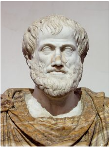
Zaključak se, kao logički oblik, sastoji od dijelova. Budući da je zaključak zapravo oblik uporabe suda, baš kao što je i sud uporaba pojmova, dijelove zaključka čine upravo sudovi. Sve ono na temelju čega sudimo, tj. sudove na temelju kojih sudimo, nazivamo premisama. Sve ono što slijedi iz premisa, nazivamo konkluzijama. Premise i konkluziju u zaključku zapisivat ćemo odijeljeno crtom koju čitamo kao „dakle“ (od lat. ergo).
Valjanost zaključka
Zaključak je valjan ako je valjana forma zaključka, a forma je valjana ako pri svakoj interpretaciji iz istinitih premisa slijedi istinita konkluzija.
Valjanost zaključka možemo slično definirati za logiku sudova i za logiku prvoga reda. U logici sudova zaključak je valjan ako nije moguće da su premise istinite, a konkluzija neistinita.
Zaključak odgovara logičkom vezniku implikacije koja se nalazi između premisa i konkluzije, dok su premise međusobno povezane veznikom konjunkcije. Takva se implikacija naziva korespondentnim kondicionalom.
Korespondentni kondicional
Korespondentni kondicional nekog zaključka jest kondicional čiji je antecedens konjunkcija premisa, a konzekvens konkluzija tog zaključka.
Na primjer, zaključak:
Ako je u Zagrebu jutro, u Washingtonu je noć.U Zagrebu je jutro.
Dakle, u Washingtonu je noć.možemo zapisati:J→N
J/N
odnosno ((J→N)∧J)→N.
Sada vidimo iz čega proizlazi naša definicija valjanosti: kako bi implikacija bila istinita, premise ne smiju biti istinite, a konkluzija neistinita.
Opći oblik zaključka prikazan je ispod
premisa 1 premisa 2 ... premisa n/
"dakle"/konkluzija
No, prema istinitosnim vrijednostima za implikaciju znamo da je ona istinita i kada je antecedens neistinit, što znači da je zaključak valjan i kada je konjunkcija premisa neistinita. Valjan zaključak s istinitim premisama naziva se pouzdanim. Dakle, kod pouzdanog zaključka istinite su i premise i konkluzija.
Upozorenje
Pripazite na razlikovanje pojmova valjanost i pouzdanost.
Zaključke bismo općenito mogli podijeliti na sljedeći način:
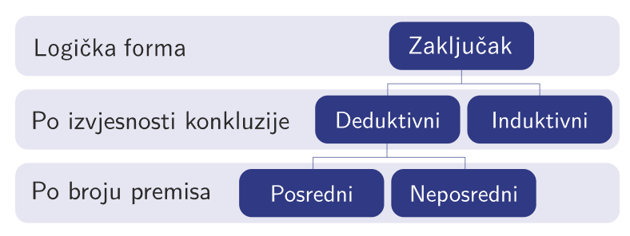
Pojam
- oblik mišljenja koji obuhvaća sve predmete određenih zajedničkih svojstva koji pod njega potpadaju kako bismo mogli razlikovati od svega ostaloga
- Kod gotovo svih pojmova (osim matematičkih) dolazi do problema subjektivnog određivanja graničnih svojstava predmeta.
-tablet i pametni telefon (određivanje gornje granice veličine pametnih telefona)
- Opseg pojma čine svi predmeti koji potpadaju pod određeni pojam.
- Sadržaj (intenziju) pojma čine sva obilježja koja neki pojam čine upravo tim pojmom.
- Što pojam ima veći opseg (pojam sisavac ima veći opseg od pojma mačka jer obuhvaća puno više jedinki), njegov je sadržaj manji jer može uključivati puno manje razlikovnih obilježja.
- Tako u sadržaj pojma mačka ulazi da je to sisavac koji se glasa mijaukanjem, rađa žive mlade, ima četiri noge itd., dok sadržaj pojma sisavac ne može uključivati prvo i treće obilježje jer postoje sisavci koji ne mijauču i koji nemaju četiri noge.
Vennovi dijagrami
Vennovi se dijagrami sastoje od djelomično preklopljenih kružnica. Vennovim dijagramima grafički prikazujemo sudove, ali ih koristimo i za iščitavanje sudova, ispravno zaključivanje te prikazivanje odnosa među pojmovima.
Kada njima prikazujemo kategorične sudove, zapravo govorimo o odnosu subjekta i predikata u tim sudovima pa se u slučaju tih sudova Vennovi dijagrami sastoje od dviju djelomično preklopljenih kružnica. Pritom je jedna kružnica skup koji predstavlja opseg subjekta, a druga opseg predikata. Zbog toga jednu kružnicu označavamo sa S, a drugu s P.
područje 1 predstavlja skup onih predmeta koji jesu S, ali nisu P∙ područje 2 predstavlja skup onih predmeta koji su i S i P∙ područje 3 predstavlja skup onih predmeta koji nisu S, ali jesu P
∙ područje 4 predstavlja skup onih predmeta koji nisu ni S ni P
.Četvrto područje predstavlja predmete koji ne pripadaju ni skupu S ni skupu P. Za kategorične sudove to nije važno jer u tom slučaju govorimo samo o odnosu pojmova iz skupova S i P pa, prema tome, ti sudovi ne govore ništa o predmetima koji ne pripadaju nijednom od tih skupova. Zbog toga se kružnice Vennova dijagrama često prikazuju bez domene (D), tj. smještaju se u beskonačnu ravninu.
Međutim, o tim predmetima ipak možemo govoriti i često govorimo, a čak i kada o njima ne znamo ništa, u Vennovu dijagramu za njih stoji upravo ta informacija -- o njima ne znamo ništa. Stoga je ovakav njihov prikaz zapravo precizniji i potpuniji.
Da bismo kategorične sudove uspješno grafički prikazali, moramo znati kako u dijagrame ispravno upisati dostupne informacije. Zato imamo svojevrsnu legendu koja će nam u tome pomoći:
a. Možemo u kružnicu upisati XX kao oznaku za neprazan razred. Time pokazujemo da u označenom skupu postoji barem jedan predmet.
b. Možemo osjenčati kružnicu kako bismo označili prazan razred. Time pokazujemo da u označenom skupu ne postoji ni jedan predmet.
c. Možemo ne označiti kružnicu. Time pokazujemo da ne znamo ništa o postojanju ili nepostojanju predmeta toga skupa.
Označavanje
Neprazan je razred onaj u kojem postoji barem jedan predmet, a prazan je onaj razred u kojem ne postoji ni jedan predmet.
U Vennovu dijagramu u područje upisujemo znak XX za neprazan razred, sjenčamo područje da bismo označili prazan razred ili ostavljamo prazno kada nemamo informacija.
Znak XX u Vennovu dijagramu univerzalnih sudova znači tradicionalno označavanje kojim se podrazumijeva postojanje barem jednog predmeta u skupu, dok se u modernom označavanju taj XX ne piše jer se ne pretpostavlja njegovo egzistiranje.
rugim riječima, prema shvaćanju tradicionalne logike nema puno smisla govoriti o svojstvima onoga što možda i ne egzistira. Međutim, uistinu možemo izražavati i takve sudove pa se moderno shvaćanje ipak smatra preciznijim i više u skladu s mogućnostima našeg mišljenja i jezika.
Upozorenje
U tradicionalnoj logici podrazumijevamo nepostojanje praznog skupa, a u modernoj dozvoljavamo njegovo postojanje.
Ta će se razlika u grafičkom prikazu pokazati u univerzalnim sudovima pa valja biti oprezan pri označavanju. Uvijek s nastavnikom provjerite o kojem se shvaćanju radi i kakav prikaz imate pred sobom.
Također, moguće je da za predmet ne znamo pripada li samo skupu SS ili i skupu SS i skupu PP. U tom slučaju ta dva područja možemo povezati crticom.
Da bismo u potpunosti ovladali Vennovim dijagramima, sve ćemo kategorične sudove ponovno prevesti u jezik logike prvoga reda kako bismo još preciznije utvrdili što se izražava svakim od tih sudova. Tako ćemo prevedene sve kategorične sudove prikazati grafički.
Općenito, ovaj sud glasi „Svi SS su PP.“, a može se kraće izraziti kao SaPSaP sud. Njime se iskazuje da svi koji pripadaju skupu SS pripadaju i skupu PP. Drugim riječima, ne postoji neki SS koji ne bi ujedno bio i PP.
Taj bismo sud jezikom logike prvoga reda mogli zapisati kao:∀x(Sx→Px)∀x(Sx→Px).
Primijetite da u jeziku logike prvoga reda imamo strelicu koja označava implikaciju. To znači da smo zapravo simbolički zapisali rečenicu:
Za svaki predmet vrijedi da ako je SS, onda je on ujedno PP.ili Ako je predmet SS onda je i PP. ili naprosto Svaki SS je PP.
No, svako čitanje te rečenice otkriva nam kondicioniranost ili uvjetovanost koja u njoj postoji. Naime, ništa nam u rečenici ne otkriva da barem jedan predmet u skupu SS uistinu postoji, već samo da kada bi postojao, bio bi ujedno i PP.
Zato grafički prikaz univerzalno-afirmativnog ili a-suda izgleda kao na slici.
Rekonstruirajmo sada kako smo došli do ovog grafičkog prikaza.
Budući da smo rekli da se a-sudom tvrdi „Svi SS su PP.“, to ujedno znači da „Ni za jedan SS ne može vrijediti da je nePP.“ Prema tome, ne može postojati predmet koji bi bio samo SS. Drugim riječima, područje koje pripada samo skupu SS mora biti prazan razred, tj. razred bez predmeta.
Ako provjerimo i ponovimo kako označavamo prazan razred, vidjet ćemo da područje koje označavamo moramo osjenčati da bismo istaknuli kako ovdje nema predmeta. Tvrdili smo i da su svi predmeti koji se nalaze u skupu SS, ako postoje, ujedno i članovi skupa PP. To bi nas moglo navesti da u presjek skupova SS i PP upišemo znak XX, ali zapamtite da bi to bilo tradicionalno tumačenje kojim se podrazumijeva postojanje predmeta o kojima govorimo. Međutim, istaknuli smo da se u modernoj logici to postojanje ne podrazumijeva, a razlog tome vidjeli smo u čitanju a-suda. To je postojanje mogućnost, ali ne i nužnost. Zato presjek tih skupova ostavljamo praznim u modernoj logici, dok u tradicionalnoj upravo ovdje upisujemo znak XX.
Predmetima iz skupa SS pridali smo neko svojstvo izraženo predikatom kategoričnog suda, odnosno svojstvo PP. To, međutim, znači još nešto. O svemu onome što bi moglo pripadati skupu PP ne znamo ništa. U to ćemo se uvjeriti pogledamo li dijagram. Cijela kružnica koja označava ono što može pripadati skupu PP potpuno je neoznačena, tj. o cijelom tom skupu nemamo nikakvih informacija. Dakako, isto vrijedi i za sve ono što ne pripada ni skupu SS ni skupu PP.
Općenito, ovaj sud glasi „Nijedan SS nije PP.“, a može se kraće izraziti kao SePSeP sud. Njime se iskazuje da nema takvog predmeta koji pripada skupu SS, a koji bi pripadao i skupu PP. Drugim riječima, ne postoji neki SS koji bi ujedno bio i PP.
Taj bismo sud jezikom logike prvoga reda mogli zapisati kao:∀x(Sx→¬Px)∀x(Sx→¬Px).
Primijetite da se u jeziku logike prvoga reda ponovno pojavljuje strelica koja označava implikaciju. To znači da smo zapravo simbolički zapisali rečenicu:
Za svaki predmet vrijedi da ako je SS, onda nije PP.ili Ako je predmet SS onda nije PP. ili naprosto Nijedan SS nije PP.
No, svako čitanje ove rečenice otkriva nam kondicioniranost ili uvjetovanost koja u njoj postoji jer nam ništa u rečenici ne otkriva da barem jedan predmet u skupu SS uistinu postoji. Kada bi postojao, zasigurno ne bi bio i PP.
Zato grafički prikaz univerzalno-negativnog ili e-suda izgleda kao na slici ispod.
Rekonstruirajmo kako smo došli do ovog grafičkog prikaza.
Budući da smo rekli da se e-sudom tvrdi „Nijedan SS nije PP.“, to ujedno znači da bi svi SS koji bi možda postojali bili nePP. Dakle, ne može postojati predmet koji je i SS i PP. Zato područje koje pripada skupu SS i skupu PP mora biti prazan razred, tj. razred bez predmeta.
Ako ponovno provjerimo kako označavamo prazan razred, vidjet ćemo da područje koje moramo označiti kao prazan razred moramo osjenčati da bismo istaknuli da ovdje nema predmeta. Slično kao i u slučaju a-suda, ponovno smo sudom zapravo samo rekli kako postoji mogućnost da predmeti u skupu SS postoje i da, ako postoje, sigurno ne pripadaju i skupu PP. Zato ćemo područje koje pripada samo skupu PP ostaviti bez upisanih informacija, tj. nećemo ga ni sjenčati niti ćemo u njega staviti znak XX. Ali, zbog toga što u tradicionalnoj logici podrazumijevamo postojanje predmeta u skupu SS, u tradicionalnom bismo prikazu u to područje stavili znak XX.
O svemu onome što bi moglo pripadati samo skupu PP ponovno ne znamo ništa. U to ćemo se uvjeriti pogledamo li ponovno dijagram. No, sada znamo da ne može postojati predmet koji bi pripadao i skupu SS i skupu PP. Dio kružnice koji označava samo skup PP potpuno je neoznačen, tj. o tom skupu nemamo nikakvih informacija. Dakako, isto vrijedi i za sve ono što ne pripada ni skupu SS ni skupu PP. Primijetite da je, za razliku od prethodnog, ovaj sud simetričan i da bi zamjenom mjesta subjekta i predikata sud i dalje vrijedio.
Općenito, ovaj sud glasi „Neki SS su PP.“, a može se kraće izraziti kao SiPSiP sud. Njime se iskazuje da postoji takav predmet koji pripada skupu SS, ali i skupu PP. Drugim riječima, postoji barem jedan SS koji je ujedno i PP.
Taj bismo sud jezikom logike prvoga reda mogli zapisati kao:∃x(Sx∧Px)∃x(Sx∧Px).
Primijetite da se u jeziku logike prvoga reda više ne pojavljuje strelica koja označava implikaciju te da je ona zamijenjena simbolom konjunkcije. Možete li obrazložiti zašto?
Vjerojatno ste ispravno zaključili da je to zato što sada tvrdimo postojanje predmeta u skupu SS koji ujedno pripada i skupu PP. U konačnici to znači da ne postoji razlika u tradicionalnom i modernom grafičkom prikazu i-suda.
Simbolički smo zapisali rečenicu:
Postoji neki predmet za koji vrijedi da je SS i da je PP.
ili Za barem jedan predmet vrijedi da je SS i PP.
ili naprosto Neki SS su PP.
Kondicioniranost ili uvjetovanost postojanja predmeta skupa SS iz prethodnih dvaju sudova ovdje je nestala.
Zato grafički prikaz partikularno-afirmativnog ili i-suda izgleda kao na slici dolje
Rekonstruirajmo kako smo došli do ovog grafičkog prikaza. Budući da smo rekli da se i-sudom tvrdi „Neki SS su PP.“, to znači da barem jedan predmet skupa SS mora biti i PP.
Dakle, mora postojati predmet koji je i SS i PP. Zato u područje koje pripada skupu SS i skupu PP moramo staviti znak XX kojim označavamo postojanje barem jednog takvog predmeta, tj. neprazan razred. Njih, dakako, može biti i beskonačno mnogo, ali to nam nije važno jer smo već sa samo jednim takvim predmetom ispunili uvjet rečenice. Budući da i dalje ne znamo ništa o predmetima koji bi pripadali samo skupu SS, samo skupu PP ili nijednom od tih skupova, sve ostalo u dijagramu moramo ostaviti prazno i time jasno pokazati da o tome nemamo nikakvih informacija.
Općenito ovaj sud glasi „Neki SS nisu PP.“, a može se kraće izraziti kao SoPSoP sud. Njime se iskazuje da postoji takav predmet koji pripada skupu SS, ali ne i skupu PP. Drugim riječima, postoji neki SS koji nije ujedno i PP.
Taj bismo sud jezikom logike prvoga reda mogli zapisati kao:∃x(Sx∧¬Px)∃x(Sx∧¬Px).
Primijetite da se u jeziku logike prvoga reda i dalje ne pojavljuje strelica koja označava implikaciju i da se ponovno koristimo simbolom konjunkcije. Ovdje ponovno tvrdimo postojanje predmeta u skupu SS, ali koji ne pripada i skupu PP. Stoga ni za ovaj sud ne postoji razlika u tradicionalnom i modernom grafičkom prikazu. Simbolički smo zapisali rečenicu:
Postoji neki predmet za koji vrijedi da je SS i da nije PP.
ili Za barem jedan predmet vrijedi da je SS, ali ne i PP.
ili naprosto Neki SS nisu PP.
Zato grafički prikaz partikularno-negativnog ili o-suda izgleda kao na slici ispod.
Do ovog grafičkog prikaza došli smo slijedeći pravila i upute kao i za prethodne sudove.
Budući da smo rekli da se o-sudom tvrdi „Neki SS nisu PP.“, barem jedan predmet skupa SS mora postojati i ne biti i PP. Dakle, mora postojati predmet koji je SS, ali koji nije PP. Zato u područje koje pripada skupu SS moramo staviti znak XX kojim označavamo postojanje barem jednog takvog predmeta, tj. neprazan razred.
Njih, naravno, ponovno može biti i beskonačno mnogo, ali to nam i dalje nije važno jer smo već samo jednim takvim predmetom ispunili uvjet rečenice kao i u prethodnom slučaju. Budući da dalje ne znamo ništa o onim predmetima koji bi pripadali i skupu SS i skupu PP, samo skupu PP ili nijednom od tih skupova, sve ostalo u dijagramu moramo ostaviti prazno i time jasno pokazati da o tome nemamo nikakvih informacija.
Upozorenje
Ponovimo da sudom „Neki SS su PP.“ ne podrazumijevamo kako zato neki SS nisu PP, kao ni da sudom „Neki SS nisu PP.“ ne podrazumijevamo kako neki SS jesu PP.
Uvijek imajmo na umu da postoji razlika u tradicionalnom i modernom prikazu univerzalnih sudova jer u prvom podrazumijevamo nepraznost skupa SS, dok u drugom to ne podrazumijevamo.
Kao što sudove možemo prikazivati grafički, iz grafičkog prikaza na jednak način možemo iščitati sudove.
Odnosi među pojmovima
Teorija skupova
Teorija skupova je grana matematike koja se bavi svojstvima kolekcija predmeta koji mogu, ali ne moraju biti matematičke prirode. Teoriju je razvio njemački matematičar i logičar Georg Cantor između 1874. i 1897. godine, a danas se naziva naivnom teorijom skupova.
S obzirom na to da će nam ključni pojmovi naivne teorije skupova biti potrebni kada budemo govorili o pojmovima, ovdje ćemo ih pojasniti.
Element ili član skupa je svaki predmet koji pripada skupu. Kako bismo naveli da neki predmet xx pripada skupu AA, pišemo x∈Ax∈A.
Skup može biti konačan ili beskonačan. U konačnom skupu možemo navesti sve njegove članove, pa primjerice skup koji sadrži prirodne brojeve veće od pet, a manje od devet označavamo {6,7,8}{6,7,8}, a skup koji sadrži prirodne brojeve veće od pet označavamo {6,7,8,...}{6,7,8,...} jer se sada radi o beskonačnom skupu (na što upućuju tri točke).
Prazan skup nema nijednog člana i on je ujedno podskup svakoga skupa. Označava se ∅∅.
Skup AA je podskup skupa BB ako su svi elementi skupa AA ujedno i elementi skupa BB. To se označava A⊆BA⊆B.
Također, svaki je skup podskup samoga sebe.
Ako skupovi AA i BB imaju iste elemente, onda su oni isti skup i pišemo A=BA=B.
Na skupovima su definirane operacije unije, presjeka i razlike.
A unija B (A∪BA∪B) jest skup koji sadrži sve elemente skupa AA i sve elemente skupa BB. Unija odgovara logičkom vezniku disjunkcije jer je dovoljno da je neki predmet element jednoga skupa kako bi se našao u uniji dvaju skupova. Ako skup AA ima elemente 1, 2 i 3, a skup BB ima elemente 2, 3 i 4, njihova će unija imati elemente 1, 2, 3 i 4.
A presjek B (A∩BA∩B) jest skup koji sadrži one i samo one elemente koji su zajednički skupu AA i skupu BB. Ako skup AA ima elemente 1, 2 i 3, a skup BB ima elemente 2, 3 i 4, njihov će presjek imati elemente 2 i 3. Presjek odgovara logičkom vezniku konjunkcije jer se neki predmet mora nalaziti u oba skupa kako bi bio u njihovu presjeku, kao što je i konjunkcija istinita jedino u slučaju kada su oba konjunkta istinita.
A razlika B (A∖BA∖B) jest skup koji sadrži one elemente skupa AA koji ujedno nisu elementi skupa BB. Ako skup AA ima elemente 1, 2 i 3, a skup BB ima elemente 2, 3 i 4, A∖BA∖B će imati element 1.
Odnosi među pojmovima
Ekvipolentni pojmovi
Ekvipolentni pojmovi su oni pojmovi koji imaju potpuno isti opseg.
Na primjer, „drugi planet Sunčeva sustava“ i “planet koji se prvi pojavljuje na jutarnjem nebu” su ekvipolentni pojmovi. U opseg pojma ulazi jedan te isti planet i samo on.
Ako opsege pojmova promatramo kao skupove AA i BB, svi elementi skupa AA ujedno su i elementi skupa BB i obrnuto, tj. skupovi AA i BB su jednaki.
Interferentni pojmovi
Dva su pojma interferentna ako im se jedan dio opsega preklapa, ali svaki od njih ima i drugi dio opsega koji ne pripada ovom drugom pojmu. Oni imaju zajednički nadređeni pojam, odnosno podskupovi su istoga skupa.
Rečeno jezikom teorije skupova, presjek dvaju skupova AA i BB može biti neprazan te nijedan od tih dvaju skupova ne smije biti podskup drugoga.
Kod interferentnih je pojmova moguće da je njihov presjek prazan skup (kada se promatraju ekstenzionalno), ali postoji mogućnost da je on neprazan zbog svojstava tih dvaju pojmova koji se u određenoj mjeri preklapaju. Primjerice, pojmovi „nosi naočale” i „učenik 3. b razreda III. gimnazije Osijek” jesu interferentni jer može postojati takav učenik, ali ne mora..
Subordinirani i superordinirani pojmovi
Pojam je subordiniran ili podređen drugom pojmu ako njegov opseg posve pripada opsegu drugoga pojma. U skladu s tim, pojam je superordiniran ili nadređen drugom pojmu ako u njegov opseg posve ulazi opseg drugoga pojma.
Rečeno jezikom teorije skupova, pojam BB je podređen pojmu AA ako je skup BB podskup skupa AA, a u istom je slučaju pojam AA nadređen pojmu BB. Na primjer, pojam mačka podređen je pojmu sisavac, dok je pojam sisavac nadređen pojmu mačka.Važno je naglasiti da podređeni pojam uvijek ima veći sadržaj od nadređenog pojma. Primjerice, pojam mačka u svom sadržaju ima i karakteristiku „glasa se mijaukanjem“, „prede“ itd., što pojam sisavac u svome sadržaju nema jer postoje sisavci koji se ne glasaju mijaukanjem i ne predu. Općenito, pojam koji ima veći sadržaj uvijek ima manji opseg i obrnuto.
Disparatni ili razdvojeni pojmovi
Disparatni ili razdvojeni pojmovi uobičajeno se definiraju kao oni pojmovi koji nemaju zajednički opseg, sadržaji su im često vrlo udaljeni po smislu, a često postoji nešto što ne potpada ni pod jedan od tih dvaju pojmova.
U jeziku teorije skupova disparatni su pojmovi oni kod kojih je presjek opsega tih dvaju pojmova prazan skup, a da postoje i entiteti koji nisu elementi unije tih dvaju skupova. Ovakvi se skupovi nazivaju disjunktnima.
Disparatni bi pojmovi bili primjerice prazan skup i stroj za šivanje. Disparatni se pojmovi mogu definirati samo opsegovno jer nije moguće pronaći pojmove koji ne dijele barem dio sadržaja.
Međutim, vidjeli smo da svaki pojam dijeli dio svog sadržaja sa svim nadređenim pojmovima, samo se taj dio smanjuje što je pojam nadređeniji (jer je njegov sadržaj sve uži).
Stoga, kad god je za dva pojma moguće pronaći zajednički nadređeni pojam, oni uvijek imaju djelomično zajednički sadržaj. Ako bismo iz gornje definicije izbacili dio koji govori o nemanju zajedničkoga sadržaja, tada bi se radilo o koordiniranim pojmovima.
Koordinirani pojmovi
Koordinirani pojmovi definiraju se kao oni pojmovi koji nemaju zajednički opseg, ali imaju zajednički neposredno nadređeni pojam, pa i zajednički dio sadržaja.
Pojmovi koji naočigled nemaju zajednički sadržaj jesu primjerice plavo i narančasto, ali dio sadržaja koji im je ipak zajednički jest „boja“.
Tu bi spadali primjerice mačka i pas, šaran i smuđ, kisik i vodik, vilica i nož.
Ovdje ćemo spomenuti i kontrarne ili suprotne pojmove koje opet u nekim slučajevima nije lako razlikovati od disparatnih i koordiniranih.
Kontrarni ili suprotni pojmovi
Kontrarni ili suprotni pojmovi su pojmovi čiji opsezi pripadaju istom nadređenom pojmu, ali su oni na posve suprotnim krajevima nekog spektra.
Primjerice, takvi su pojmovi jedno i mnogo, pozitivni i negativni brojevi (jer je između nula koja nije ni pozitivan ni negativan broj), istina i neistina u viševrijednosnoj logici (gdje osim istine i neistine postoji jedna ili više istinitosnih vrijednosti).
Kontradiktorni pojmovi
Kontradiktorni su pojmovi takvi da je jedan negacija drugog. Iako imaju zajednički nadređeni pojam, a time i zajednički dio sadržaja, posjeduju dio sadržaja koji je kontradiktoran, odnosno koji čini to da ništa ne može pripadati opsegu obaju pojmova, ali sve mora pripadati jednom od njih.
Takvi su primjerice pojmovi prirodno i umjetno, materijalno i nematerijalno, moguće i nemoguće, istinito i neistinito. Rečeno jezikom teorije skupova, presjek takvih skupova jest prazan, ali svaki je entitet element jednoga od tih skupova. Također, svaki je od tih skupova komplement drugog skupa.
Upozorenje
Primijetite da je često slučaj da neki pojmovi mogu istovremeno pripadati većem broju odnosa. Također, moguće je da ćete u nekim drugim udžbenicima pronaći donekle različite definicije odnosa među pojmovima.
Definicija
Kako smo već napomenuli, pojmovi su zapravo isto što i skupovi. Jedina razlika je u tome što se pojmovi definiraju na poseban način, s pomoću svojstva. Primjerice, zamislimo da želimo opisati pojam „x je kanta.“ ili Kx
. Ako gledamo na kante kao na skup, onda skup tih predmeta možemo definirati na dva načina.
Jedan je način da navedemo sve članove skupa, poput {kanta1,kanta2,kanta3,…,kantan}
, što se naziva ekstenzionalnom definicijom. Ekstenzionalna je definicija pogodna za pojmove čiji opseg nije prevelik, kao na primjer pojam kontinenta.
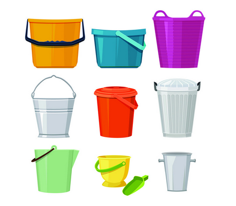
Drugi je način definiranje s pomoću obilježja (svojstva), što se naziva intenzionalnom definicijom. Tako skup svih kanta definiramo kao {x∣x je kanta}
odnosno
{x∣Kx}.
Formalno, to je skup svih x-eva takvih da je x
kanta.
Iako je ova definicija pojma prihvatljiva (premda je blizu cirkularnosti), vjerojatno bismo htjeli da nam definicija daje više informacija od „skup svih x
-eva takvih da je x
kanta“.
Htjeli bismo da kaže nešto drukčije, da nam kaže na primjer „Kanta je posuda koja ima ručku.“ Bez obzira što ovo možda nije dobra definicija u stvarnom svijetu, zamislimo radi jednostavnosti da su kante jedine posude koje imaju ručku i da sve kante imaju ručku, odnosno da je ova zdravorazumska definicija točna.
Odavde nadalje, radi jednostavnosti, smatrat ćemo da je činjenično dobra definicija kante sljedeća: sve kante imaju ručku (ako je izgube više nisu kante, nego recimo zdjele) i svaka posuda koja ima ručku automatski postaje kanta, kakva god bila ta posuda ili ručka. Dakle, sve što kanti treba jest da je posuda i da ima ručku. Naravno da ovakva definicija ne odražava dobro stvarnost jer je primjerice standardna šalica također posuda s ručkom. Međutim, to ovdje zanemarujemo jer nam nije cilj dati preciznu definiciju koja vrijedi u stvarnome svijetu, nego dati jednostavnu definiciju na kojoj možemo ilustrirati sve pojmove i ideje koje želimo. Ovo je važno jer nam takav pogled na stvari znatno pojednostavljuje nastavak teksta. Ono što nam ovdje treba, odgovara tradicionalnoj definiciji definicije.
Tradicionalna definicija
Tradicionalna definicija nekog pojma P
je oblika „P je ... “. Drugim riječima, rečenica uobičajeno počinje pojmom koji definiramo, a koji se naziva definiendum, nakon čega slijedi kopula je, a s desne strane dio rečenice koji određuje pojam P
naziva se definiens.
Definiens
Definiens se dijeli na genus proximus (nadređeni pojam) i differentia specifica (ono što čini definirani pojam različitim, odnosno ključna razlika).
Primjer bi mogao biti „Čekić je alat koji služi za udaranje.“, pri čemu je „čekić“ definiendum, a ostatak rečenice definiens. Pritom je u definiensu „alat“ genus proximus (pojam „čekić“ je podpojam pojma „alat“), a „služi za udaranje“ je differentia specifica, koja razlikuje čekiće od ostalih alata. Uočimo da je intenzionalna definicija upravo tradicionalna definicija zapisana modernom notacijom, pa bismo mogli definiciju čekića zapisati kao {x|x služi za udaranje}
pri čemu x obuhvaća sve alate, ili pak {y|y je alat∧y služi za udaranje}, ako y obuhvaća sve predmete.
Divizija
Kod tradicionalne smo definicije za definiranje koristili viši pojam i ključnu razliku.
Na primjer, u definiciji pojma ruby čokolade, „Ruby je čokolada koja je prirodno ružičaste boje i kiselkasto-slatkastog okusa.“, viši je pojam čokolada.
Može nas zanimati kakve sve vrste čokolade postoje, stoga želimo znati koji su sve pojmovi neposredno podređeni pojmu čokolada. Tako se pojam čokolada dijeli na mliječnu, tamnu, bijelu i ruby, a takvu podjelu nazivamo divizijom.
Divizija
Divizija (dioba) metoda je podjele koja pokriva cijeli opseg pojma, ali bez preklapanja, stoga su pojmovi dobiveni divizijom koordinirani. Kako bi divizija bila ispravno provedena, mora biti iscrpna.
Divizija ima nekoliko elemenata. Kada je riječ o diviziji čokolade na mliječnu, tamnu, bijelu i ruby, čokolada predstavlja diobenu cjelinu, dok se mliječna, tamna, bijela i ruby čokolada nazivaju članovima diobe. Diobena cjelina prisutna je u svim članovima diobe.
Ako bismo čokoladu podijelili na bijelu, čokoladu s lješnjacima, čokoladu s keksom i ruby, ta divizija ne bi bila iscrpna jer postoje i mnoge vrste čokolade koje ovdje nisu uključene.
Također, kako bi divizija bila potpuna, potrebno je rabiti jednako načelo, pa ne možemo miješati podjelu na mliječnu, bijelu, tamnu i ruby čokoladu s onom na čokoladu u čvrstom stanju i tekuću čokoladu.
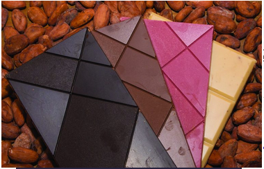
Ljestvica pojmova
Ljestvica pojmova jest način grafičkog prikaza viših i nižih pojmova tako da je najviši pojam (koji u svom opsegu sadržava sve druge navedene pojmove) na vrhu ljestvice, a ispod njega slijede niži pojmovi na način da je pojam najmanjega opsega na dnu ljestvice.
Kod ljestvice pojmova važno je pripaziti da se kao niži ne uključuju oni pojmovi čiji se opseg samo djelomično podudara s opsegom višega pojma. Primjerice, vlak nije niži pojam pojmu električno vozilo jer postoje vlakovi koji su na dizelski ili parni pogon. Također, uočite da će za neke pojmove biti moguće izraditi različite ljestvice pojmova, što ne znači da je jedna točna, a druge nisu.
Piramida pojmova
Za razliku od ljestvice pojmova u kojoj smo tražili samo jedan niži pojam izravno podređen nekom drugom pojmu, kod piramide pojmova (koja se naziva i klasifikacijom) tražimo sve takve pojmove koji su međusobno usporedni ili koordinirani. Ponekad, ako se ne radi o nekoj strogo ograničenoj domeni, kao što su matematički likovi, teško možemo znati jesmo li iscrpili sve usporedne pojmove, ali nastojimo piramide napraviti što obuhvatnijima.
Primjer takve piramide pojmova koja nikako nije konačna jest:
Tautološki, kontradiktorni i zadovoljivi sudovi
Zamislite da gledate vremensku prognozu jer sutra idete na izlet i zanima vas kakvo će biti vrijeme. Ovisno o vremenu, odjenut ćete različitu odjeću i planirati različite aktivnosti. No, na vaše potpuno iznenađenje, meteorolog izgovara sljedeću rečenicu:
Sutra će padati kiša ili neće padati kiša.
Mijenjate program jer vam treba informacija i trenutačno vam nije do šale, ali i na drugoj vremenskoj prognozi zatečeni ste rečenicom:
Sutra će padati kiša i neće padati kiša.
U obje vas prognoze zbunjuje nedostatak informativnosti s kojom ste suočeni. Naime, niste dobili informaciju koja bi vam pomogla u odabiru odjeće i aktivnosti za predviđeni izlet.
Nedostatak informativnosti s kojim ste suočeni proizlazi iz činjenice da njihovu istinitost ili neistinitost ne trebate provjeravati ili verificirati u stvarnom svijetu. Naime, navedene su rečenice uvijek istinite ili neistinite i zbog toga prilično neupotrebljive izvan formalno-logičkog sustava.
Rečenicu „Sutra će padati kiša ili neće padati kiša.“ možemo prevesti s
P∨¬P
,
a istinitosne vrijednosti oba disjunkta uvijek će biti suprotne jer imamo sud i njegovu negaciju. S
obzirom na to da je veznik u sudu disjunkcija, a ona je istinita kad god je barem jedan od rečeničnih dijelova istinit, ovaj će isud uvijek biti istinit.
Tautologija
Sudove koji su istiniti za svako istinitosno vrednovanje nazivamo tautologijama ili (opće)valjanim sudovima.
Valjan i nevaljan sud
Valjani su sudovi tautologije, a nevaljani su sudovi svi sudovi koji nisu tautologije, odnosno svi sudovi koji su barem u jednom tumačenju neistiniti.
Kod tautoloških sudova svi redci istinitosne tablice imat će vrijednost istina.
Primjerice, napravimo li istinitosnu tablicu za sud „Sutra će padati kiša ili neće padati kiša.“, vidjet ćemo da je on istinit u svim redcima.
S druge strane, rečenica „Sutra će padati kiša i neće padati kiša.“ također u sebi sadrži rečenične dijelove suprotnih istinitosnih vrijednosti, ali se kao logički veznik u njoj javlja konjunkcija. Za nju znamo da je istinita ako i samo ako su oba konjunkta istinita. A kako to ovdje ne može biti slučaj, polazna će rečenica uvijek biti neistinita.
Kontradikcija
Sudove koji su neistiniti za svako istinitosno vrednovanje nazivamo kontradikcijama.
Kod kontradiktornih sudova svi redci istinitosne tablice imat će vrijednost neistina, pa će naš sud „Sutra će padati kiša i neće padati kiša.“ imati istinitosnu tablicu prikazanu zdesna.
Takva je zapravo velika većina sudova kojima se svakodnevno služimo. Pogledajmo sud „Pada kiša ili nije sunčano.“ Možemo ga prevesti s K∨¬S koji je sam po sebi istinit ili neistinit te sigurno nije ni tautologija ni kontradikcija
Prethodni je sud zadovoljiv jer je istinit u trima redcima istinitosne tablice (postoje tri tumačenja za koja je istinit), dok je za jedno tumačenje (u trećem retku) neistinit.
Zadovoljiv (konzistentan) sud
Sudove koji mogu biti istiniti za jedno istinitosno vrednovanje, a neistiniti za drugo nazivamo zadovoljivim ili konzistentnim sudovima.
Zaključno, poigramo li se stečenim informacijama u obliku neposrednog deduktivnog zaključka, možemo reći da su sve tautologije zadovoljivi sudovi, dok su samo neki zadovoljivi sudovi ujedno i tautologije. Sve kontradikcije su nezadovoljivi sudovi, kao što su i svi nezadovoljivi sudovi kontradikcije, a nijedan zadovoljiv sud nije kontradikcija i obrnuto.
Valjanost zaključka može se provjeravati na različite načine. Neke od metoda za provjeru valjanosti jesu istinitosne tablice, reductio ad absurdum i istinitosna stabla. Ako zaključak nije valjan, to se može utvrditi navođenjem protuprimjera, odnosno pronalaženjem tumačenja u kojem su premise istinite, a konkluzija neistinita.
Reductio ad absurdum
Dosad smo valjanost zaključka u logici sudova provjeravali metodom istinitosne tablice. No, vidjeli smo da će, što je veći broj različitih jednostavnih sudova, istinitosna tablica imati veći broj redaka. Već za četiri suda tablica ima 16 redaka, što oduzima dosta vremena za izradu, a i postoji mogućnost pogreške. Stoga ćemo prikazati metodu koja funkcionira po principu istinitosnih tablica, ali nam skraćuje posao jer se odmah usmjeravamo na traženje tumačenja u kojem zaključak nije valjan, odnosno retka (redaka) u tablici u kojima složeni sud nije istinit. Osim za provjeru valjanosti zaključka, ova se metoda može koristiti za određivanje je li sud valjan, zadovoljiv ili kontradiktoran, kao i za provjeru jesu li dva suda istovrijedna.
U doslovnom prijevodu reductio ad absurdum znači svođenje na apsurd.
Riječ je o vrsti argumenta u kojem se neodrživost neke tvrdnje pokazuje tako da se pokaže kako iz nje proizlazi apsurd, to jest mi određenu tvrdnju svodimo na apsurd. Zbog toga što vodi u apsurd, tu tvrdnju odbacujemo.
Pokušajmo još malo objasniti kako ova metoda djeluje.
Pretpostavimo da Petrica i Tihana raspravljaju o nečemu, pri čemu Petrica tvrdi da iz A
i B slijedi C, dok Tihana tvrdi da slijedi ¬C
. Petrica tek treba dokazati da Tihanina tvrdnja nije točna, a time da njezina jest točna. Stoga će uzeti Tihaninu tvrdnju kao da ona vrijedi, a ako u izvodu dođe do apsurda, može je odbaciti (odnosno odbacuje postojanje protuprimjera) jer je pokazala da ne vrijedi te prihvaća suprotnu, to jest svoju početnu tvrdnju.
Uzmimo kao primjer zaključak prikazan ispod:
Ovaj je zaključak sastavljen od premisa koje čine sudovi P∧K i P∧R i konkluzije R→K. Pretpostavit ćemo istinitost premisa i neistinitost konkluzije kako bismo utvrdili je li apsurd moguć:
Budući da znamo da je konjunkcija istinita samo kada su svi konjunkti istiniti te da je implikacija neistinita samo u slučaju kada je antecedens istinit, a konsekvens neistinit, postoji samo jedan slučaj, odnosno jedan redak koji možemo riješiti:
Sada smo upisali sve nužne istinitosne vrijednosti sudova i njihovih dijelova. Budući da su obje premise složeni sudovi s konjunkcijom, svi jednostavni sudovi od kojih su sastavljeni moraju biti istiniti. Možemo primijetiti da se pretpostavljena istinitosna vrijednost konkluzije ne može održati jer je implikacija istinita kada su antecedens i konsekvens neistiniti. Stoga ćemo mjesto na kojem je došlo do apsurda precrtati (često možemo birati hoćemo li to napraviti s premisom ili konkluzijom):
Precrtavši dio zaključka (neovisno koji), pokazujemo da smo, pretpostavivši da su premise istinite, a konkluzija neistinita, došli do apsurda. Prema tome možemo odbaciti negiranu konkluziju i utvrditi da je zaključak valjan.
Promotrimo sljedeći primjer zaključka:
Opet ćemo pretpostaviti istinitost premisa i neistinitost konkluzije:
No, sada u premisama imamo disjunkcije, a one mogu biti istinite u tri slučaja. Krenimo stoga od konkluzije koja je ponovno neistinita samo u slučaju istinitosti antecedensa i neistinitosti konsekvensa:
Budući da su u konkluziji istinitosne vrijednosti članova implikacije nužne, možemo ih prenijeti tamo gdje se ti isti članovi pojavljuju u premisama:
Jedini preostali član bez određene istinitosne vrijednosti je P. U drugoj premisi njegova istinitosna vrijednost nije važna jer je s istinitim R disjunkcija već sigurno istinita. Međutim, u prvoj je premisi K neistinit, pa bi P trebao biti istinit kako bi disjunkcija bila istinita prema pretpostavci:
Označivši sve do kraja, vidimo da pretpostavka istinitih premisa i neistinite konkluzije ne može biti odbačena jer nas nigdje nije dovela do apsurda. Drugim riječima, uspjeli smo dobiti protuprimjer i time pokazati da konkluzija ne slijedi nužno iz premisa te da zaključak nije valjan. Protuprimjer je P, R, ¬K.
Upozorenje
Provjerom valjanosti zaključka metodom reductio ad absurdum pretpostavljamo da konkluzija ne slijedi iz premisa, odnosno da postoji tumačenje u kojem su premise istinite, a konkluzija neistinita. Ako takvo tumačenje postoji, ono predstavlja protuprimjer te zaključak nije valjan. Ali s obzirom na to da smo pretpostavili da je zaključak nevaljan, ako smo došli do protuslovlja (apsurda), zaključujemo da zaključak nije nevaljan, odnosno nema protuprimjera, pa je zaključak valjan.
Dakle:
Pronašli smo protuprimjer →
zaključak nije valjan.
Nismo pronašli protuprimjer →
zaključak je valjan.
Istinitosna tablica u logici sudova
Istinitosna stabla
Za gradnju istinitosnih stabala poslužit će uvjeti istinitosti složenih sudova kako su predstavljeni u izgradnji istinitosnih tablica.
U istinitosnim stablima sudovi se rastavljaju željenim redoslijedom, ništa nas ne obvezuje da ih rastavljamo redom kojim se pojavljuju. Međutim, uputno ih je rastavljati tako da dobijemo što manje razgranato stablo kako bismo reducirali mogućnosti i time si olakšali posao i sveli mogućnost pogreške na najmanju moguću mjeru.
Kada rastavimo neki sud do kraja, označimo ga kvačicom kako bismo znali da smo završili s rastavljanjem tog suda.
Nakon što rastavimo sve potrebno, na svakoj grani stabla tražimo moguću kontradikciju. Ako se kontradikcija javlja, kraj te grane ćemo označiti križićem (×
) kako bismo naznačili da je staza zatvorena. Ako nema kontradikcije, na kraj stavljamo kružić (∘
) koji znači da je staza otvorena.
Križić i kružić daju nam interpretaciju suda ili skupa sudova. Otvorena staza (koja završava kružićem) znači da postoji interpretacija suda ili skupa sudova koja daje istinu, odnosno da je sud ili skup sudova zadovoljiv. Zatvorena staza (koja završava križićem) znači da postoji interpretacija suda ili skupa sudova koja daje neistinu, odnosno da skup sudova nije zadovoljiv. Ako je skup sudova u kojem se nalaze premise i negirana konkluzija nekonzistentan, zaključak je valjan.
Pogledajmo kako izgledaju pravila za stablo i samo stablo.
Za konjunkciju već znamo da je istinita kada su svi konjunkti istiniti. Pretpostavimo da je konjunktivni sud jedini sud u stablu. Stablo bi izgledalo kao što je prikazano ispod.
Ako vrijedi konjunkcija, onda moraju vrijediti i svi konjunkti. Stoga smo ih mogli izdvojiti iz cijelog suda na istoj grani, a stablo se nije proširilo jer postoji samo jedna mogućnost istinitosti. Pritom konjunkti ne moraju biti ispisani redom kojim se pojavljuju u konjunkciji, a isto pravilo vrijedi i za sva druga rastavljanja suda.
Rastavljanje suda označili smo kvačicom kraj njega. Na kraju smo stavili kružić jer se nigdje ne pojavljuje kontradikcija. Dakle, postoji barem jedna interpretacija koja nam kaže da je konjunkcija kao takva istinita, dakle, barem zadovoljiva. No, ona ne bi uvijek trebala biti i istinita, a to također možemo ispitati istinitosnim stablom.
Da bismo utvrdili da sud nije kontradikcija, dovoljna nam je jedna istinita interpretacija početnog suda. Da bismo utvrdili da sud nije tautologija, moramo utvrditi postoji li istinita interpretacija njemu kontradiktornog suda, tj.\ njegove negacije:
Kontradikcija konjunkcije je negacija cijelog tog suda. Negacija konjunkcije podrazumijeva da ona nije istinita, a to odgovara trima redcima u istinitosnoj tablici za konjunkciju. Naime, moguće je da u tom slučaju bilo koji od dijelova konjunkcije nije istinit, a moguće je da istovremeno oba nisu istinita. Stoga negacija konjunkcije odgovara disjunkciji s negiranim disjunktima. To je pravilo istovrijednosti jedno od De Morganovih pravila.
Budući da ni na jednoj grani nema kontradikcije, opet imamo istinitu interpretaciju početnog suda. No, kako je to interpretacija negiranog suda, moramo zaključiti da je moguća neistinitost konjunkcije kao takve. To, dakako, odgovara onom što smo vidjeli u istinitosnim tablicama.
Oba ova postupka pokazala su da je konjunkcija zadovoljiva, ali i da nije tautologija, ali ni kontradikcija.
De Morganova pravila ili De Morganovi zakoni
¬(P∧Q)≡¬P∨¬Q
¬(P∨Q)≡¬P∧¬Q.
U prethodnom je primjeru usporedno pokazan i način rastavljanja disjunkcije. Rastavljanje disjunkcije vrši se u istom retku jer za istinitost disjunkcije, i prema istinitosnim tablicama, dovoljno je da barem jedan disjunkt bude istinit.
Stoga se istinitosno stablo račva na dvije grane, a time pokazujemo postojanje dviju mogućnosti za istinitu interpretaciju. Budući da su i u disjunkciji staze otvorene, ona je sigurno zadovoljiva. Kako bismo vidjeli oba slučaja De Morganovih pravila, pogledajmo i je li disjunkcija sama po sebi tautologija. Slijede stabla za disjunkciju i negaciju disjunkcije.
Budući da je staza na kraju otvorena, očito postoji istinita interpretacija za neistinitu disjunkciju. Dakle, disjunkcija može biti neistinita, tj. također nije tautologija.
Početni je sud negirana disjunkcija jer nas zanima je li disjunkcija tautologija, tj. mora li negirana disjunkcija biti neistinita. Prema De Morganovu pravilu transformirali smo negaciju disjunkcije u konjunkciju neistinitih dijelova suda. Tu smo konjunkciju rastavili poput konjunkcije u prvom primjeru. Pored oba suda stavili smo kvačicu kad smo ih rastavili.
Na isti način možemo provjeriti implikaciju i ekvivalenciju:
Iz stabala je vidljivo da ni implikacija ni ekvivalencija nisu ni tautologije ni kontradikcije, već zadovoljivi sudovi. U oba smo slučaja stablo gradili tako da smo početne sudove uz pomoć istovrijednosti i istinitosnih uvjeta rastavili do jednostavnih sudova i da smo na svakoj stazi izbjegli kontradikcije.
Zakon istovrijednosti
Prema zakonima istovrijednosti vrijedi: P→Q≡¬P∨Q
P↔Q≡(P∧Q)∨(¬P∧¬Q) ¬(P→Q)≡P∧¬Q ¬(P↔Q)≡(P∧¬Q)∨(¬P∧Q).
Za kraj je potrebno još samo pokazati kako u stablu baratamo negacijom, što je prikazano ispod.
ZAKONI istovrijednosti
Svaki sud s parnim brojem negacija ima isto značenje kao sud bez negacije, a sud s bilo kojim neparnim brojem negacija ima isto značenje kao sud s jednom negacijom. I ovdje je potrebno rastavljeni sud označiti kvačicom.
Upozorenje
Stablo koje u sebi sadrži barem jednu granu s kružićem i barem jednu s križićem (barem jednu otvorenu i barem jednu zatvorenu stazu) pokazuje da je skup sudova zadovoljiv jer otvorena staza otkriva da postoji protuprimjer. Stoga često možemo iskoristiti jedno stablo za provjeru sudova.
Provjerimo sada još neke sudove:
Budući da smo dobili barem jednu otvorenu stazu bez kontradikcije, tj. barem jednu interpretaciju za koju je sud istinit, sud je sigurno zadovoljiv, tj. nije kontradikcija. Želimo li ispitati je li tautologija, morat ćemo ga negirati što je prikazano sljedećim stablom.
Može se postaviti pitanje zašto bismo za provjeru valjanosti suda trebali negirati sve grane i onda tražiti da su sve zatvorene? Odgovor leži u tome da je stablo jedna ''skraćena'' metoda s obzirom na istinitosne tablice.
U određenom smislu, problem je u tome što je zatvorena grana konkretno definirana, a otvorene grane su definirane kao sve ostale grane koje nisu zatvorene. Zbog toga ne možemo otvorene grane koristiti kao test za tautologiju jer su one otvorene kad god nemaju kontradikciju.
Intuitivno, to možemo gledati na sljedeći način. Imamo tri kategorije: kontradikcije, tautologije i zadovoljive sudove. Sve zatvorene grane govore da se radi o kontradikciji, no ako nisu sve grane zatvorene, ne znamo je li sud zadovoljiv ili tautologija. Da bismo to vidjeli na primjeru, stavimo u stablo A∧B
i gledajmo kako se ponaša. U tom stablu imamo samo jedan korak, odnosno imamo nedovoljno "materijala" da ga razvijemo do eventualne kontradikcije, koja je jedini način da se neka grana zatvori. Zbog toga, za provjeru tautologičnosti se formula AwedgeB
stavlja u negirana stabla i gleda se je li se tada sve grane zatvaraju. Ako da, onda je početna formula tautologija.
Rastavljanjem suda do kraja naišli smo čak na dvije kontradikcije, Q
i ¬Q te P i ¬P
.
Nakon što smo rastavili bilo sud u drugom, bilo sud u trećem retku (svejedno kojim redoslijedom), već smo došli do kontradikcije. Da je nakon bilo kojeg od tih sudova uslijedio n
broj grana na kojima bismo dalje rastavljali sudove, svaka od tih grana odvela bi nas natrag do glavne grane i do kontradikcije koja je na njoj prisutna.
Stoga je sigurni završetak bilo koje pretpostavljene grane križić (x). On predstavlja uočenu kontradikciju pa zaključujemo da je sud koji smo provjeravali tautologija.
Pogledajmo još jedan primjer.
Početni je sud rastavljen i obje su staze zatvorene, tj. dale su neistinitu interpretaciju suda. Moramo zaključiti da za sud ne postoji istinita interpretacija te da nije zadovoljiv, tj. da je kontradikcija.
Istinitosnim stablima možemo ispitati i valjanost zaključka. Kao i u metodi reductio ad absurdum, pretpostavit ćemo premise, ali i negaciju konkluzije. Postoji li za takav slučaj istinita interpretacija, zaključak ne može biti valjan jer neistina ne može slijediti iz istinitih premisa. Ne postoji li takva interpretacija, zaključak je valjan. Ispitajmo sljedeće zaključke:
Stablo smo izgradili do kraja rastavljajući sve sudove, a krenuvši od najjednostavnijeg i onog koji nam neće dati više grana. Nakon toga smo rastavili negiranu konkluziju koja nam također daje samo jednu granu. Ovdje smo mogli i stati te odmah zatvoriti stablo jer smo dobili dvije očite kontradikcije na glavnoj stazi. No, kako bismo jasnije pokazali rezultat istinitosnog stabla, izgradili smo stablo do kraja i označili obje staze dobivene rastavljanjem prvog suda kao zatvorene. Drugim riječima, za naš slučaj koji smo provjeravali, naime da neistinita konkluzija slijedi iz istinitih premisa, ne postoji konzistentna interpretacija. Dakle zaključak je valjan.
U ovom smo primjeru sve napravili jednako. Negirali smo konkluziju i rastavljali prvo konjunkciju koja nam daje samo jednu mogućnost. Konkluziju nismo rastavljali jer je ne možemo rastaviti. Na lijevoj smo grani dobili kontradikciju, ali smo na desnoj dobili istinitu interpretaciju. Budući da se ne smije dogoditi slučaj u kojem neistina (negirana konkluzija) slijedi iz istina (premisa bez negacije), zaključak nije valjan.
Jednako kao što istinitosnim stablima možemo provjeravati jesu li sudovi tautologije, kontradikcije ili zadovoljivi sudovi, možemo provjeriti i jesu li sudovi istovrijedni.
To možemo napraviti na dva načina: za svaki sud možemo izgraditi posebno stablo i provjeriti vrijede li za oba suda jednake interpretacije istinitosti i neistinitosti ili, kao u zadatku 2.13, stablom provjeriti negaciju ekvivalencije. Gradeći oba stabla, moramo imati na umu da svakim stablom moramo ispitati istinitost početnog suda i negaciju suda za koji želimo ustanoviti je li istovrijedan početnom sudu, tj. da time propitujemo slijedi li iz početnog suda sud za koji provjeravamo je li mu istovrijedan.
Provjerimo to na jednom od sudova čiju smo istovrijednost već koristili, tj.\ na P→Q
≡ ¬P∨Q
. Napravit ćemo dva stabla: jednim ćemo provjeriti slijedi li iz lijeve strane desna, a drugim vrijedi li obrnuto. To ćemo napraviti tako da krenemo od dvije negirane ekvivalencije.
U stablima odmah krećemo s pravilom za negaciju disjunkcije i pravilom za negaciju ekvivalencije:
Budući da su sve staze zatvorene, zaključujemo da nema slučaja u kojem sudovi P→Q i ¬P∨Q imaju različitu vrijednost, odnosno nemoguće je da jedan bude istinit, a drugi neistinit.
Istinitosna stabla u logici prvoga reda
Prisjetimo se onoga što smo već rekli o valjanosti: kako bi zaključak bio valjan, u svim slučajevima kada su istinite premise, mora biti istinita i konkluzija. Drugim riječima, zaključak je valjan ako i samo ako ne postoje protuprimjeri, odnosno slučajevi u kojima su premise istinite, a konkluzija neistinita.
U logici prvoga reda naši su slučajevi interpretacije, a njih je uvijek beskonačno mnogo (jer varijable možemo zamijeniti s beskonačno puno konstanti u slučaju beskonačnih domena ili sa svim konstantama u slučaju konačnih domena) pa ih nikad ne možemo sve provjeriti kako bismo bili sigurni da ne postoje protuprimjeri. Stoga protuprimjere tražimo koristeći istinitosna stabla.
Izgradnju stabla počinjemo isto kao i u logici sudova −
na početku stabla navodimo premise i negaciju konkluzije.
Metoda stabala za logiku prvoga reda funkcionira na potpuno isti način kao i za logiku sudova, samo s jednom izmjenom: grane više ne predstavljaju jedan redak istinitosne tablice koji će sve sudove duž pojedine grane učiniti istinitim, nego sada grane predstavljaju jednu interpretaciju koja će sve sudove duž tih grana učiniti istinitim.
Upozorenje
Također, uveli smo izmjenu u označavanju. Naime, u stablu se mogu, a ne moraju pisati brojevi redaka i opravdanja koja kazuju iz kojih je prethodnih redaka neki sljedeći redak izveden. U logici sudova takvo označavanje često nije nužno, a i otežava sam zapis, pogotovo kod stabala koja imaju puno grananja. U logici prvoga reda takav je zapis koristan jer nekad iz samoga retka nije lako zaključiti iz čega je dobiven, pogotovo kada se radi o isključenjima kvantifikatora. Stoga ćemo pisati potpuna opravdanja kad se radi o isključenjima kvantifikatora, a u ostalim slučajevima samo retke iz kojih je formula dobivena.
Pogledajmo kako to funkcionira na jednom jednostavnom primjeru.
Svi vole Anu. ∀xVxaKarlo voli Anu. Vka
Počinjemo tražeći interpretaciju u kojoj je premisa istinita, a konkluzija neistinita navodeći premisu i negaciju konkluzije:
1.∀xVxaP
2.¬Vka¬K
Kako je ¬Vka
negirani jednostavni sud, s njim ne možemo ništa dalje učiniti. Ali kako je ∀xVx
kvantificirani sud, možemo ga učiniti istinitim tako da sudove koji su sadržani u njemu učinimo istinitima
Budući da je taj sud istinit ako je istinito da svi vole Anu, možemo zamisliti interpretaciju (mogući svijet) u kojem je domena ograničena na Karla i Anu.
U tom slučaju, taj je sud istinit ako je istinito da Ana voli Anu (odnosno da voli samu sebe −
jer nigdje nismo rekli da je ta relacija isključena) i da Karlo voli Anu. Stoga u stablo dalje uvrštavamo supstitucijske instance Vka i Vaa u kojima su umjesto varijable x uvrštene konstante k i a
.
1.∀xVxaP2.¬Vka¬K3.Vka1,∀,k4.Vaa1,∀,a×
I time je stablo zatvoreno jer u njemu imamo ¬Vka
i Vka
. Prema tome, zaključak je valjan.
Pravilo za univerzalni kvantifikator
Ako se univerzalno kvantificirani sud pojavi u nekom retku stabla, potrebno je postupiti na sljedeći način sa svakom otvorenom granom u kojoj se on pojavljuje:
1) Prikupiti sve konstante koje se pojavljuju unutar te grane. Ako se ne pojavljuje nijedna konstanta, potrebno je jednu uvesti.
2) Unijeti supstitucijske instance s tim konstantama i napisati sve konstante u opravdanju u redcima u kojima se one uvode. U redak u kojem se nalazi univerzalni kvantifikator ne ide kvačica.
3) Ako se isti univerzalno kvantificirani sud pojavljuje u više grana, potrebno ga je u svakoj grani instancirati samo za one konstante koje se javljaju u toj grani.
Pogledajmo sljedeći zaključak:
Netko je simpatičan.Dakle, Bruno je simpatičan.
Taj je zaključak očito nevaljan jer to što je netko simpatičan, ne znači da je taj netko baš Bruno. Na to moramo posebno obratiti pažnju kod formuliranja pravila za egzistencijalno kvantificirane sudove.
Kao i inače, počinjemo premisom i negacijom konkluzije:
1.∃xSxP✓
2.¬Sb¬K
Sud koji sadrži egzistencijalni kvantifikator istinit je u nekoj interpretaciji samo u slučaju da je najmanje jedna od supstitucijskih instanci istinita u toj interpretaciji. Imamo jednu konstantu, b
, u toj interpretaciji, stoga možemo učiniti ∃xSx istinitim ako učinimo Sb istinitim. Ali ako to napravimo, dodajemo Sb u granu koja već ima ¬Sb
, stoga se ona zatvara. To bi značilo da nema protuprimjera, što znači da je zaključak valjan, ali znamo da nije, stoga je nešto pogrešno.
Ključni je problem što simpatičan može biti i netko drugi osim Brune. Na to upućujemo na način da egzistencijalno kvantificirani sud instanciramo novom konstantom. Tako ćemo ∃xSx
učiniti istinitim dodajući Sa na kraj grane, gdje je a
nova konstanta. Dodajemo tu novu konstantu kako bismo bili sigurni da su obuhvaćeni i ostali predmeti koji su bili u interpretaciji.
Stoga potpuno stablo izgleda ovako:
1.∃xSxP✓2.¬Sb¬K3.Sa1,∃,a∘
Sada vidimo da je zaključak nevaljan jer postoji protuprimjer D={a,b};¬Sb∧Sa
, koji nam govori da u ovoj interpretaciji, za domenu u kojoj su Bruno i Ana, vrijedi da Bruno nije simpatičan, ali Ana jest.
Pravilo za egzistencijalni kvantifikator
Ako se egzistencijalno kvantificirani sud pojavljuje u nekom retku u stablu, tada u svakoj otvorenoj grani u kojoj se on pojavljuje treba napraviti sljedeće:
1) izabrati novu konstantu koja se ne pojavljuje nigdje u grani
2) uvesti jednu supstitucijsku instancu koja uključuje novu konstantu
3) staviti kvačicu desno od egzistencijalno kvantificiranog suda koji je instanciran.
Još su nam potrebna pravila za negaciju kvantificiranih sudova. Krenimo s jednostavnim primjerom:
Vib∃xVxb
Napravimo stablo:
1.VibP
2.¬∃xVxb¬K
Kako bismo se riješili negacije koja se nalazi prije kvantifikatora, koristimo pravila za pretvorbu koja smo učili ranije:
¬∃x≡∀x¬ i ¬∀x≡∃x¬.
Sada možemo dovršiti stablo:
1.VibP2.¬∃xVxb¬K✓3.∀x¬Vxb2,¬∃4.¬Vib3,∀,i5.¬Vbb3,∀,b×
S obzirom na to da smo ovdje nakon pretvorbe imali univerzalni kvantifikator, postupali smo dalje po pravilu za univerzalni kvantifikator.
Na sljedećem ćemo primjeru prikazati pretvorbu negiranog univerzalnog kvantifikatora u egzistencijalni:
∃xVxb∀xVxb
1.∃xBxbp✓2.¬∀xVxb¬K✓3.∃x¬Vxb2,¬∀✓4.Vnb1,∃,n5.¬Vrb3,∃,r∘
Zaključak nije valjan jer postoji protuprimjer
D={b,n,r}; ¬Vrb∧Vnb.
Neka je Vxb = x voli Borisa, n= Nataša, a R
= Robert. Dakle, ako su u domeni Boris, Robert i Nataša, moguće je da Nataša voli Borisa, ali da Robert ne voli Borisa, stoga iz toga da netko voli Borisa ne slijedi da svi vole Borisa.
Upozorenje
Kod stabala je potrebno paziti na sljedeće:
∙
Uvijek se koristi pravilo za rastavljanje glavnog veznika u sudu. Ako sud počinje kvantifikatorom u čijem je dosegu cijeli sud, tada se prvo primjenjuje pravilo za kvantifikator. Ako je u dosegu kvantifikatora samo dio suda, tada se prvo primjenjuje pravilo za glavni veznik.
∙
Kada se radi o univerzalnom kvantifikatoru, potrebno ga je instancirati za sve konstante koje se nalaze u grani (naravno, ako grana nije ranije zatvorena).
∙
Kada se radi o egzistencijalnom kvantifikatoru, potrebno je uvesti novu konstantu i instancirati sud samo za tu konstantu.
U RADU
Prirodna dedukcija u logici sudova
U ovom ćemo poglavlju kao glavni dokazni sustav proučavati sustav prirodne dedukcije u Fitchevoj notaciji.
Jedan gotov dokaz u sustavu prirodne dedukcije zapisan Fitchevom notacijom prikazan je u nastavku.
U ovom ćemo poglavlju kao glavni dokazni sustav proučavati sustav prirodne dedukcije u Fitchevoj notaciji.
Jedan gotov dokaz u sustavu prirodne dedukcije zapisan Fitchevom notacijom prikazan je u nastavku.
U redu je ako vam ništa nije jasno jer shvatiti i znati reproducirati ovakvu dedukciju konačan je cilj ovog poglavlja. Na kraju ovog poglavlja dokaze ćete ne samo razumjeti nego ćete ih i sami konstruirati. No, krenimo redom.
Prvo ćemo opisati gore prikazanu strukturu. Prije svega, dokaz je podijeljen na retke, a s lijeve strane nalaze se brojevi redaka. S pomoću tih se brojeva možemo u objašnjenjima referirati na određeni redak.
Okomita crta s lijeve strane koja odvaja brojeve redaka jest crta dokaza, a ostale okomite crte jesu crte poddokaza. Na vrhu svake crte poddokaza nalazi se jedna formula podvučena vodoravnom crtom. To je pretpostavka. Svaka pretpostavka znači otvaranje novog poddokaza, a formule koje su sadržane u nekom poddokazu mogu se koristiti jedino unutar tog poddokaza. Povratak na bilo koju prethodnu okomitu crtu dokaza moguć je tek nakon zatvaranja poddokaza otvorenog tom pretpostavkom.
Osim pretpostavki svaka je formula u dokazu dobivena iz nekog konkretnog retka (ili više njih), nekim točno određenim pravilom. Oznake s desne strane su objašnjenja, odnosno opravdanja izvođenja formule primjenom definiranih pravila. Primjerice, opravdanje u 7. retku kaže da je formula u 7. retku (⊥
) dobivena iz 2. retka i postupcima od 3. do 6. retka pravilom za isključenje egzistencijalnog kvantifikatora. Ubrzo ćemo objasniti što to znači.
Drugim riječima, ukratko smo opisali „anatomiju“ dokaza, a u ostatku ovog poglavlja bavit ćemo se njegovom „fiziologijom“, odnosno definirat ćemo i objasniti kako pojedina pravila djeluju
Krenimo s objašnjenjem dvaju jednostavnih pravila. Prvo se pravilo zove uvođenje ili introdukcija konjunkcije 1 (oznaka: ∧I)
Pravilo za uvođenje ili introdukciju konjunkcije
Ako imamo P
u retku m i Q u retku n, onda u retku o možemo dobiti P∧Q, gdje je o iza m i o iza n
.
Dakle, jedino je bitno da redak o
dolazi nakon redaka m i n, ali nije bitno da on bude neposredno nakon njih, a nije bitno niti kojim redoslijedom dolaze m i n
.
Drugo je pravilo isključenje ili eliminacija konjunkcije (oznaka: ∧
E):
Isključenjem konjunkcije možemo dobiti oba konjunkta, stoga u dokaz uvodimo onaj konjunkt koji nam je potreban. Po potrebi možemo isto pravilo primijeniti i dva puta kako bismo dobili oba konjunkta.
Pravilo za isključenje ili eliminaciju konjunkcije
Ako je P∧Q
u retku m, onda u retku o možemo dobiti P (ili Q), gdje je o iza m
.
Pogledajmo primjer. Kako iz tvrdnje A∧B
dokazati da vrijedi B∧A
? Time bismo zapravo dokazali komutativnost konjunkcije:
Želimo dokazati formulu
(A∧B)→(B∧A)
bez pretpostavki. Da bismo u tome uspjeli, treba nam pravilo koje se naziva uvođenje ili introdukcija implikacije.
Pravilo je prikazano ispod.
Pogledajmo što se događa u ovom pravilu. Prije svega, uočimo da se u retku o
nalazi implikacija koju želimo dokazati.
Pravilo za uvođenje ili introdukciju implikacije
Ako smo u redcima od m
do n iz pretpostavke P izveli Q, onda u retku o možemo uvesti implikaciju P→Q, gdje je o iza n
.
Drugim riječima, ako je konkluzija koju želimo dokazati implikacija P→Q
, onda u gornjim redcima moramo otvoriti poddokaz s dodatnom pretpostavkom P. Ako iz nje (i ranijih pretpostavki) uspijemo dokazati da vrijedi Q, tada je i bez pretpostavke P (koju odbacujemo i zatvaramo poddokaz) dokazivo P→Q
.
Opravdanje za redak o
ovaj put nije isto kao u slučaju konjunkcije − gdje smo se pozvali samo na retke m i n − ovdje se pozivamo na cijeli niz redaka od m do n, odnosno na cijeli poddokaz, temeljem kojeg uvodimo implikaciju u retku o
.
Ovo pravilo primijenit ćemo u rješavanju našeg zadatka. Evo kako dedukcijom možemo dokazati
(A∧B)→(B∧A)
.
Opišimo dokaz. S obzirom na to da trebamo dokazati implikaciju (A∧B)→(B∧A), morali smo pretpostavkom A∧B otvoriti poddokaz te iz toga dokazati (drugim pravilima) B∧A. Formulu u 1. retku poddokaza (A∧B) rastavili smo pravilom za isključenje konjunkcije, i to dva puta. Prvi put smo u 2. retku dobili A, a drugi put smo u 3. retku dobili B
.
Zatim smo koristili pravilo za uvođenje konjunkcije: ako u nekim gornjim redcima imamo P
i Q (i to bilo kojim redom), onda možemo uvesti P∧Q. Ova mogućnost „bilo kojim redom“ znači da smijemo uvesti i Q∧P, što je upravo varijanta koja nam ovdje odgovara. Tako iz redaka 2 i 3 pravilom za uvođenje konjunkcije nastaje B∧A
u 4. retku.
Sada imamo sve što nam treba za redak 5. Naime, iz pretpostavke A∧B
dokazali smo u poddokazu B∧A pa pravilom za uvođenje implikacije iz postupaka od 1. do 4. retka dobivamo 5. redak.
Objasnit ćemo sada i pravilo za isključenje ili eliminaciju implikacije. Prisjetimo se kako glasi modus ponens, jedan od osnovnih oblika valjanog zaključivanja.
Iz pretpostavki „Ako kiša pada, onda trava raste.“ i „Kiša pada.“, zaključujemo „Trava raste.“
Simbolima to zapisujemo kao P→Q,P⊨Q
.
Ovo zaključivanje zapravo predstavlja pravilo za isključenje implikacije:
Pravilo za isključenje ili eliminaciju implikacije
Ako u retku m
imamo P→Q i u retku n imamo P, onda u retku o možemo dobiti Q, gdje je o iza m i n
.
Uočimo da nam, za razliku od isključenja konjunkcije, ovdje trebaju i redak m
i redak n da bismo dobili redak o
, na što ukazuje opravdanje u tom retku.
Dokažimo modus ponens oblikovan u jednu formulu:
((A→B)∧A)→B
.
S obzirom na to da trebamo dokazati implikaciju, očito je da će nam trebati isključenje implikacije. Evo kako izgleda potpuni dokaz:
Pravilo za uvođenje ili introdukciju ekvivalencije
Ako smo u redcima od j do k iz P
izveli Q, a u redcima od m do n iz Q izveli P, onda u retku o možemo uvesti ekvivalenciju P↔Q
, gdje je o iza k i n.
Pravilo nećemo posebno objašnjavati jer nam je otprije poznato da je ekvivalencija konjunkcija dviju implikacija. Stoga, ako možemo izvesti implikaciju u oba smjera, možemo i uvesti ekvivalenciju.
Pravilo za isključenje ili eliminaciju ekvivalencije
Ako u retku m imamo P↔Q
i u retku n imamo P, onda u retku o možemo dobiti Q, gdje je o iza m i n. Također, ako u retku m imamo P↔Q i u retku n imamo Q, onda u retku o možemo dobiti P, gdje je o iza m i n.
Krenimo dalje na pravilo za uvođenje ili introdukciju disjunkcije. Ovo jednostavno pravilo ponekad se naziva i slabljenje.
Pravilo za uvođenje ili introdukciju disjunkcije
Ako u prethodnim redcima imamo P
(ili za Q), onda možemo dobiti P∨Q
.
Drugim riječima, zbog komutativnosti disjunkcije redoslijed tvrdnji P
i Q nije bitan, pa i iz Q možemo dobiti P∨Q. Zbog toga nam pravilo daje dvije mogućnosti:
Sada prelazimo na pravilo za isključenje ili eliminaciju disjunkcije:
Objasnimo što se događa.
Pravilo za isključenje ili eliminaciju disjunkcije
Formula R
slijedi iz disjunkcije P∨Q ako u prethodnim redcima postoji dokaz za R iz P i dokaz za R iz Q
.
Disjunkcija P∨Q
ne daje puno informacija o tome što iz nje slijedi. Međutim, ako iz oba njena disjunkta slijedi R, onda sigurno i iz disjunkcije slijedi R
. I to je cijelo pravilo isključenja disjunkcije.
Pogledajmo primjer, odnosno dokažimo komutativnost disjunkcije kao jednu formulu bez pretpostavki. To znači da trebamo dokazati
A∨B
ako i samo ako B∨A
,
odnosno ako A∨B
, onda B∨A i obrnuto (ako B∨A, onda A∨B
). Dovoljno je dokazati samo jedan smjer, uz napomenu da drugi smjer ide na sasvim analogan način.
Dokažimo smjer s lijeva na desno, odnosno ako A∨B
onda B∨A. Prvi korak je pretvoriti „ako A∨B, onda B∨A
“ u formulu:
(A∨B)→(B∨A)
i zatim sastavljamo dedukciju:
Prokomentirajmo što smo napravili. Prije svega, morali smo uvesti cijelu implikaciju u 7. retku. To znači da smo ispred trebali imati poddokaz koji iz pretpostavke A∨B dolazi do B∨A
, a to je poddokaz od 1. retka do 6. retka.
Unutar tog poddokaza moramo dokazati B∨A
, a imamo samo jednu pretpostavku, A∨B
. Dakle, samo trebamo naći način da povežemo te dvije formule.
Upozorenje
Kada trebamo dokazati neku formulu, intuitivno je najprije dokazujemo uz pomoć pravila za uvođenje glavnog veznika. Međutim, ponekad ta jednostavna strategija ne vrijedi jer za uvođenje disjunkcije moramo imati jedan disjunkt.
Druga je opcija pravilo za isključenje disjunkcije koje nam omogućava da dokažemo bilo koju formulu R
. U našem slučaju želimo da to bude formula B∨A
(6. redak).
No, pravilo za isključenje disjunkcije ima nekoliko uvjeta za primjenu. Prvi je uvjet da imamo disjunkciju koju ćemo isključiti, što je u našem slučaju disjunkcija A∨B
u 1. retku. Drugi je uvjet da iz oba disjunkta, A i B, moramo moći dokazati formulu R, odnosno u našem slučaju B∨A
.
U našem je primjeru to jednostavno dokazati jer uvođenjem disjunkcije nad A
dobivamo B∨A, a u drugom poddokazu uvođenjem disjunkcije nad B isto dobivamo B∨A. Time smo dovršili dokaz.
Uvedimo najprije simbol za kontradikciju: ⊥
.
Kontradikcija
Kontradikcija je konjunkcija bilo koje formule i njezine negacije: P∧¬P
za bilo koji P
.
Za kontradikciju uvodimo sljedeće pravilo:
U ovom i u pravilima za negaciju koja tek slijede, propozicijska konstanta ⊥ ponaša se kao bilo koja propozicijska varijabla, primjerice kao P ili Q. ⊥ dolazi na njihova mjesta u formulama, sa ⊥ se mogu stvarati složene formule, ona može biti i formula R
iz pravila za isključenje disjunkcije.
Općenito se s njome po svemu postupa kao i s bilo kojom drugom formulom −
osim po jednome: kada se ⊥
pojavi u poddokazima, mogu se koristiti pravila za negaciju.
Postoje dva takva pravila, pravilo za uvođenje ili introdukciju negacije i pravilo za isključenje ili eliminaciju negacije. Ta su pravila:
Pravila su jako slična i glase:
Pravila za negaciju
Ako pretpostavimo P
(odnosno ¬P) pa iz toga dobijemo kontradikciju (⊥), tada P (odnosno ¬P
) u kombinaciji s drugim premisama nije konzistentno (uz pretpostavku da su druge premise međusobno konzistentne).
Intuitivno, to znači da P
(tj. ¬P ako gledamo isključenje negacije) ne vrijedi uz druge premise. Može se reći i da je P zajedno s drugim premisama nekonzistentno, što pak znači da se ¬P može dodati ostalim premisama, a da one ne postanu nekonzistentne. To čini ova pravila valjanim.
U ovom ćemo potpoglavlju pokazati kako se dokazuju neke od najpoznatijih tautologija.
Dokažimo bez premisa jednu klasičnu tautologiju koja se naziva zakon neproturječja:
¬(A∧¬A)
Ovakvi bi vam dokazi sada trebali biti jasni, pa ovaj dokaz nećemo posebno komentirati. Umjesto toga, dokazat ćemo i komentirati jedan smjer svakog od dvaju De Morganovih zakona..
Ovakvi bi vam dokazi sada trebali biti jasni, pa ovaj dokaz nećemo posebno komentirati. Umjesto toga, dokazat ćemo i komentirati jedan smjer svakog od dvaju De Morganovih zakona.
Krenimo s dokazom:
ako ¬A∨¬B
, onda ¬(A∧B) .
U dokazu krećemo od konkluzije ¬(A∧B). Pretpostavimo da ju možemo dokazati uvođenjem negacije, pa zato otvaramo poddokaz i pretpostavljamo A∧B u 2. retku s ciljem da dobijemo ⊥. Zato od 3. do 5. retka i od 6. do 8. retka otvaramo poddokaze nužne za isključenje disjunkcije iz 1. retka. Za formulu R iz pravila o isključenju disjunkcije uzmemo ⊥
.
Za usporedbu pogledajmo i sljedeći smjer drugog pravila:
ako ¬A∧¬B
, onda ¬(A∨B)
.
Dokaz će biti skoro isti kao i prethodni, pa ga i sami možete razumjeti i objasniti:
Pogledajmo sada dokaz formule
(¬A→¬B)→(B→A)
Prokomentirajmo ovaj dokaz. Kao i uvijek kada trebamo dokazati nešto bez pretpostavki, najprije pogledamo o kojoj je formuli riječ. Ovdje smo trebali dokazati (¬A→¬B)→(B→A)
, što znači da dokazujemo implikaciju.
Upozorenje
Ponekad ćemo imati situaciju u kojoj moramo dokazati formulu koja nije implikacija bez premisa. Ti su slučajevi ili krajnje jednostavni, poput dokaza za ¬(A∧¬A)
, ili krajnje komplicirani, poput dokaza za A∨¬A
.
Implikacija nam znatno olakšava posao jer u tom slučaju otvorimo poddokaz, a u njegovu premisu stavimo antecedens ¬A→¬B
. Cilj je od toga doći do B→A
. Kada taj poddokaz bude gotov, pravilom za uvođenje implikacije automatski ćemo imati dokaz za cijelu formulu (što vidimo u opravdanju 8. retka).
No, trebamo dobiti 7. redak, odnosno trebamo pronaći dokaz za B→A
, a imamo samo jednu premisu, onu u 1. retku. Ona će nam biti važna, ali će nam trebati još neke premise da bi se dokaz „složio“.
Razmislimo na koje sve načine možemo dobiti B→A
.
Prvi pokušaj neka uvijek bude uvođenje implikacije. To znači da trebamo otvoriti novi poddokaz koji pretpostavlja B
(2. redak) te iz toga i ostalih premisa daje dokaz za A (6. redak). Sada se pitamo kako ćemo dobiti A
iz te formule bez veznika u 2. retku.
Formula bez veznika
Kad želimo izvesti formulu bez veznika, postoje dva načina kako bismo je mogli dobiti:
∙
pravilom za isključenje disjunkcije ili
∙
pravilom za isključenje negacije.
S obzirom na to da u gornjem dijelu našeg dokaza nemamo nikakvu disjunkciju koju bismo isključili, odlučujemo se za isključenje negacije.
Ako A
u 6. retku želimo dobiti isključenjem negacije, to znači da trebamo otvoriti poddokaz s pretpostavkom ¬A. Otvaramo ga od 3. retka gdje je ¬A sve do 7. retka. Da bi pravilo za isključenje negacije bilo primjenjivo, u tom poddokazu trebamo doći do ⊥. Čim dođemo do ⊥, gotovi smo i zatvaramo poddokaz, pa ⊥
stavljamo na dno, na mjesto označeno kao 5. redak.
Upozorenje
Uočite da pri izradi dedukcije brojeve redaka u dokazu zapravo ne znamo do samoga kraja, ali ovdje objašnjavamo već napisani dokaz zato da se jasno možemo referirati na pojedine retke.
Preostaje nam naći dokaz za ⊥
u 5. retku. Za to imamo na raspolaganju premise ¬A→¬B, B i ¬A. Uočimo da iz ¬A→¬B i ¬A možemo zaključiti ¬B, a onda ¬B i B daju ⊥. I time je dokaz gotov.
Prije nego što krenemo na logiku prvog reda, dajemo dva složenija dokaza. Prvi je dokaz Peirceova pravila:
((P→Q)→P)→P
.
Prokomentirajmo dokaz. Trebamo dokazati implikaciju ((P→Q)→P)→P i to bismo pokušali s pomoću uvođenja implikacije (u 11. retku). To znači da otvaramo poddokaz s pretpostavkom (P→Q)→P u 1. retku odakle bismo trebali dobiti P
.
Dakle, glavno je pitanje kako dobiti P
u 10.\ retku.
Prisjetimo se dviju ranije spomenutih mogućnosti:
1. P
dobiti kao R
1. s pomoću pravila za isključenje disjunkcije ili
2. upotrijebiti pravilo za isključenje negacije.
Kako nemamo nijednu disjunkciju, nastavljamo s idejom da P
dobijemo isključenjem negacije. To znači da otvaramo poddokaz s pretpostavkom ¬P u kojem moramo doći do ⊥
.
Do ⊥
ćemo doći ili putem P i ¬P ili putem Q i ¬Q. Ali između dviju kontradikcija, one na temelju P ili one na temelju Q, ne možemo se lako odlučiti. Trebali bismo isprobati obje kontradikcije, ali ispostavit će se da treba uzeti P i ¬P. Jedan od razloga je u tome da se P
u dokazu pojavljuje na više mjesta, ali to je više posljedica intuicije nego racionalan razlog.
Uočimo da ¬P
već imamo u 2.\ retku, ali nedostaje nam P. Vraćamo se staroj ideji da iz (P→Q)→P uz pomoć P→Q (koji nemamo) isključenjem implikacije dobijemo P
.
Ovo ostavlja dojam da se vrtimo u krug, ali ovaj put imamo dodatnu pretpostavku, ¬P
. S obzirom na to da znamo da ćemo jednom kada imamo P→Q lako dobiti P, zapisujemo P u 8. redak, a P→Q
u 7. redak.
Sada tražimo dokaz za P→Q
. Poslužit ćemo se osnovnom strategijom za dokazivanje implikacija: uvođenjem implikacije. To znači da otvaramo novi poddokaz s pretpostavkom P i moramo nekako dobiti Q
.
Kako dobiti Q
? Imamo ponovno dvije opcije:
1. Q
dobiti kao R
1. isključenjem disjunkcije ili
2. upotrijebiti pravilo za isključenje negacije.
Kako u gornjem dijelu nemamo disjunkciju, idemo s isključenjem negacije. Uočimo da među svim premisama koje smo nagomilali, imamo P
i ¬P, čime ćemo dobiti potrebni ⊥ u 5.\ retku. Dopunimo detalje i time smo dovršili dokaz.
Na kraju ćemo nakon Peirceova pravila dokazati i zakon isključenja trećeg:
A∨¬A
.
Dokaz je dosta kompleksan, ali lijepo ilustrira kako se koriste pravila.
Prokomentirajmo ga.
A∨¬A
ne možemo dokazati uvođenjem disjunkcije jer je nemamo iz čega uvesti. Stoga konkluziju možemo dobiti ili isključenjem negacije ili kao R isključenjem disjunkcije. S obzirom na to da na početku nemamo nikakvu disjunkciju koju možemo isključiti, krećemo s isključenjem negacije pa otvaramo poddokaz i u 1. redak pišemo ¬(A∨¬A). Znamo da u tom poddokazu moramo dobiti ⊥ pa ga zapisujemo u redak koji će na kraju biti označen brojem 7. Sada trebamo ideju kako dobiti ⊥
.
Možda bismo ⊥
mogli dobiti od nekog A i ¬A, ali u pretpostavkama nemamo ni A ni ¬A
. Bismo li ih mogli nekako dobiti?
Razmislimo što imamo u pretpostavkama. Imamo samo ¬(A∨¬A)
, a ta je formula oblika ¬Q. Znači, trebali bismo još samo formulu oblika Q, a to je onda A∨¬A
.
A sad trebamo dokazati isto ono o čemu smo već raspravljali i što smo željeli dokazati na početku, ali s jednom ključnom razlikom: sada imamo jednu pretpostavku više, a onda je nismo imali.
Pokušajmo na ovaj način: u 1. retku imamo ¬(A∨¬A)
i onda u 6. redak stavljamo A∨¬A, ali to tek moramo dokazati. Sad se vraćamo alternativama za dobivanje A∨¬A
. Isključenje neke disjunkcije zvuči dobro, ali ono što imamo u 1. retku nije disjunkcija, nego negacija, tako da taj pokušaj otpada.
Ostaju nam dvije opcije. Prva, (A∨¬A)
dobiti isključenjem negacije iz neke dodatne pretpostavke i druga, (A∨¬A) dobiti uvođenjem disjunkcije iz A ili ¬A
.
Intuicija nam kaže da je bolje ići uvođenjem disjunkcije. Zašto? Jer ako idemo isključenjem negacije, morat ćemo otvoriti poddokaz identičan onom koji ide od prvog do zadnjeg retka. Imat će istu konkluziju, ali i istu pretpostavku pa zaključujemo da tako nećemo napraviti korak naprijed prema rješenju.
Idemo li sada uvođenjem disjunkcije, to znači da ćemo morati dobiti primjerice ¬A
ili A. Pokušajmo sa ¬A. Stavljamo ¬A u 5. redak, otvaramo poddokaz s pretpostavkom A u 2. retku. Iz A uvođenjem disjunkcije dobijemo A∨¬A, i uz pomoć formule iz 1. retka dobijemo ⊥
u 4. retku, što nam je i trebalo. Time smo dovršili dedukciju.
Upozorenje
U prethodnom dokazu mogli smo ići i s pretpostavkom ¬A
s ciljem da dobijemo A. Uočite da uvođenje disjunkcije kod tautologija uvijek ima svog „skrivenog dvojnika“: ako je potrebno uvesti disjunkciju za dokaz tautologije, negdje će je trebati uvesti preko jednog disjunkta, a negdje, na nekom drugom mjestu u istom dokazu, preko drugog.
Odnosi među pojmovima
Uvedimo prva dva dodatna pravila za dedukciju u logici prvog reda,pravilo za isključenje ili eliminaciju univerzalnog kvantifikatora i pravilo za uvođenje ili introdukciju egzistencijalnog kvantifikatora:
Pravilo za isključenje ili eliminaciju univerzalnog kvantifikatora
Ako imamo dokaz za ∀xPx
, onda imamo dokaz za Pt, pri čemu je t
bilo koja varijabla ili konstanta.
Zajednički naziv za varijablu i konstantu je term. Dakle, kada kažemo da je nešto term, to znači da to može biti varijabla ili konstanta.
Jedini je uvjet za isključenje univerzalnog kvantifikatora taj da varijabla x
bude zamijenjena termom koji označava neki element domene.
Ako imamo dokaz za Pt, gdje je t bilo koji term, onda imamo i dokaz za ∃xPx
.
Sada prelazimo na pravilo za isključenje ili eliminaciju egzistencijalnog kvantifikatora kako je prikazano ispod.
Uz ovo pravilo moraju vrijediti i sljedeće dodatne napomene:
1. s
mora biti term koji se ne javlja niti u jednoj drugoj premisi osim u Ps
• ,
• U je bilo koja formula, ali ne smije sadržavati term s
2. .
Upozorenje
Ove su napomene sastavni dio pravila isključenja egzistencijalnog kvantifikatora i pravilo se ne smije koristiti bez njih.
Prokomentirajmo sada pravilo isključenja egzistencijalnog kvantifikatora. Vrijedi li formula ∃xPx
, onda znamo da za neki term vrijedi P, ali ne znamo za koji. Zato uzmemo neki novi predmet s i pretpostavimo da za njega vrijedi P. Ako iz te pretpostavke možemo dokazati neku tvrdnju U, koja se uopće ne tiče predmeta s, to znači da U vrijedi i bez pretpostavke Ps, tj.\ da U vrijedi isključivo na temelju ∃xPx
.
Pravilo za isključenje ili eliminaciju egzistencijalnog kvantifikatora
Ako iz pretpostavke Ps
možemo dokazati neku tvrdnju U koja se uopće ne tiče predmeta s, onda U vrijedi isključivo na temelju ∃xPx. Pritom s mora biti term koji se ne javlja niti u jednoj drugoj premisi osim u Ps, a U je bilo koja formula koja ne sadrži term s.
Za kraj smo ostavili pravilo za uvođenje ili introdukciju univerzalnog kvantifikatora kako je prikazano u nastavku:
Prokomentirajmo što pravilo kaže.
Px
(ima varijablu koja nije vezana nijednim kvantifikatorom − slobodna varijabla) i ∀xPx zapravo iste tvrdnje.
Zbog toga nam za ovo pravilo ne trebaju nikakvi dodatni uvjeti, osim uvjeta da x
ne smije biti slobodna varijabla niti u jednoj aktivnoj premisi.
Pravilo za uvođenje ili introdukciju univerzalnog kvantifikatora Ako imamo formulu Px
gdje je x slobodna varijabla, onda imamo i formulu ∀xPx
.
U nekim drugim verzijama dedukcije, koje ne prihvaćaju korištenje slobodnih varijabli, ovo je pravilo znatno kompliciranije i kosi se s našom intuicijom.
Pogledajmo jednostavan primjer, dokaz formule
∀x∀yRxy→∀y∀xRyx
,
koji nam zapravo kaže da smijemo zamijeniti „imena“ varijabli x
i y
.
Objasnimo što se događa. Drugi redak dobiven je iz 1. retka isključenjem univerzalnog kvantifikatora. Pravilo kaže da iz ∀xPx možemo izvesti Pt za bilo koji term t koji želimo. Za taj ćemo term odabrati varijablu z
i tako dobiti 2. redak.
Uočimo da kvantifikatore isključujemo jedan po jedan, pa 3. redak dobivamo iz 2. retka još jednom primjenom pravila za isključenje univerzalnog kvantifikatora. Ovaj ćemo put za term izabrati varijablu w
.
Doduše, mogli smo opet izabrati varijablu z
, ali tada bismo u formuli imali Pzz pa bismo pri ponovnom uvođenju kvantifikatora dobili ∀xPxx, što je točno 3
, ali nije ono što trebamo dokazati.
Upozorenje
Moramo paziti da nam se varijable slučajno ne stope u jednu, što se naziva sukob varijabli.
Četvrti redak dobili smo iz trećeg pravilom za uvođenje univerzalnog kvantifikatora. Uočimo da smo ga mogli primijeniti zato što smo kod ranijih isključenja birali varijable, a ne konstante.
Sada slijede dva dokaza koji su međusobno vrlo slični i u svojoj su osnovi jednostavni, ali lijepo ilustriraju primjenu novih pravila.
Prvi dokazuje formulu
∃xPx→¬∀x¬Px
,
a drugi je dokaz da vrijedi formula
∀x¬Px→¬∃xPx
Proučit ćemo drugi dokaz. Trebali smo dokazati formulu ∀x¬Px→¬∃xPx
, a već znamo da implikaciju najčešće dobivamo uvođenjem implikacije. Ovaj slučaj nije iznimka pa krećemo dopisivati retke koji će biti neophodni za uvođenje implikacije (u 8. retku).
Najprije u 1. retku otvaramo poddokaz pretpostavkom ∀x¬Px
, a u redak koji će kasnije biti označen brojem 7 stavljamo ¬∃xPx
. Zapitamo li se kako bismo mogli dobiti ovu formulu, prvi odgovor koji nam pada na pamet je točan: uvođenjem negacije.
To znači da nam treba još jedan poddokaz, ovaj put s pretpostavkom ∃xPx
, koji treba završiti sa ⊥ (u retku koji će na kraju biti označen brojem 6). Sada je ključno pitanje kako dobiti ⊥
u 6. retku.
⊥
se najčešće dobiva pravilom za isključenje disjunkcije (kao formula R iz tog pravila), ali sada bismo mogli upotrijebiti i novo pravilo za isključenje egzistencijalnog kvantifikatora koje isto tako sadrži proizvoljnu formulu, a označili smo je sa U. Uvjet za primjenu pravila za isključenje disjunkcije bio je da ranije imamo neku disjunkciju, a to nemamo. Uvjet za isključenje egzistencijalnog kvantifikatora bio je da imamo neku formulu gdje je egzistencijalni kvantifikator glavni veznik. Takvu formulu imamo u 2. retku i sada krećemo s idejom da je U iz pravila za isključenje egzistencijalnog kvantifikatora zapravo ⊥
.
Otvaramo novi poddokaz, s pretpostavkom Pd
u 3. retku, pri čemu moramo pripaziti da se term d ne javlja niti u jednoj drugoj aktivnoj premisi. Te druge aktivne premise su u našem slučaju 1. i 2. redak, a u njima nema terma d
.
Osim toga, moramo paziti da u formuli U
isto tako nema terma d. Kako je formula U=⊥
, možemo mirno nastaviti jer su ispunjeni svi uvjeti za primjenu pravila za isključenje egzistencijalnog kvantifikatora iz 2. retka.
Unutar ovog zadnjeg poddokaza moramo dobiti ⊥
, što znači da moramo imati neki Q∧¬Q. U našem je slučaju najizglednije je da ćemo imati Pd i ¬Pd. Uočimo da Pd imamo u 3. retku, a nedostaje nam još ¬Pd. Njega pak lako možemo dobiti iz 1. retka isključenjem univerzalnog kvantifikatora. Sjetimo se da u pravilu za isključenje univerzalnog kvantifikatora nema nikakvih ograničenja, osim što podrazumijevamo da taj neki term postoji. Znamo da nam treba d dolje, odnosno da nam 2. redak kaže kako barem jedan term postoji. Tako smijemo isključiti univerzalni kvantifikator iz 1. retka 1 u 4. redak, koristeći se termom d tako da dobijemo ¬Pd. Time smo dovršili dokaz.
Slijedi još jedan sličan, ali ipak malo kompliciraniji dokaz, za formulu
¬∀x¬Px→∃xPx
Ovaj se dokaz malo razlikuje od prethodnih dvaju dokaza. Prije svega, uočite korištenje slobodne varijable y. Ona nam treba da u 3. retku možemo uvesti univerzalni kvantifikator. Cijeli je taj poddokaz zapravo isključenje negacije kojom dobivamo Py u 5. retku. Na njemu primjenjujemo pravilo za uvođenje egzistencijalnog kvantifikatora. To pravilo zahtijeva da t označava bilo koji term. S obzirom na to da je varijabla y
term, ovaj korak u dedukciji smijemo napraviti.
Pogledajmo još jednu dedukciju:
Prokomentirajmo ovaj dokaz. Prije svega, d je proizvoljni term (možda konstanta), a w je slobodna varijabla. Uočimo da u premisi zadnjeg poddokaza (2. redak) imamo d. U 3. retku imamo Pwd
, koji je dobiven iz 2. retka pravilom za isključenje univerzalnog kvantifikatora.
To pravilo uvjetuje da moramo imati nešto u domeni, odnosno da domena mora imati barem jedan term, a to već imamo u premisi −
taj je term d. Uočimo da to ne znači da moramo uzeti d pri isključenju, baš suprotno, uzimamo najčešće nešto drugo. Ali moramo znati da je domena neprazna i da imamo barem jedan term jer je onda u redu da ∀xPx→∃xPx
bude dokazivo. Kao što smo ranije vidjeli, ako pravilo za isključenje univerzalnog kvantifikatora nema zadovoljen ovaj uvjet, onda će ova formula biti dokaziva, ali zbog toga što nema garancije o nepraznosti domene, moguće je da ta formula nije istinita (a u isto je vrijeme dokaziva). Zbog toga je uvjet da mora postojati neki term u domeni nužan. Njime se čuva pouzdanost cijelog sustava.
Kada je taj uvjet ispunjen i u domeni nešto postoji (a time je naš dodatni uvjet zadovoljen), nije problem da ∀xPx→∃xPx
bude dokazivo jer je ta formula tautologija za sve neprazne domene.
Pogledajmo sada kako smo iz 3. retka dobili 4. redak. Nad Pwd
primjenjujemo uvođenje egzistencijalnog kvantifikatora nad d
(pravilo se primjenjuje bez ograničenja) i dobivamo 4. redak. Na 4. redak primjenjujemo pravilo za uvođenje univerzalnog kvantifikatora i dobivamo 5. redak.
Jesmo li smjeli primijeniti ovo pravilo? Jedini je uvjet da w
mora biti slobodna varijabla koja nije slobodna niti u jednoj (u tom trenutku aktivnoj) premisi (to su premise ∃y∀xPxy u 1. retku i ∀xPxd u 2. retku − nijedna nema slobodnu varijablu w
). Ostatak dedukcije je jednostavan.
Pogledajmo sada i jednu jednostavnu dedukciju u kojoj su u interakciji dva pravila, isključenje disjunkcije i isključenje egzistencijalnog kvantifikatora.
U pravilima za isključenje disjunkcije isključenje egzistencijalnog kvantifikatora R i U nisu jednako fleksibilni. Za R nema nikakvih uvjeta, a za U postoji uvjet. To znači da je prije − u dubljim poddokazima − bolje koristiti isključenje disjunkcije, a tek na kraju isključenje egzistencijalnog kvantifikatora.
Najprije ćemo navesti jedan primjer dedukcije iz logičkog kvadrata. Prisjetimo se sljedećih oblika:
∙
SaP, Svi S su P, simbolima ∀x(Sx→Px)
∙ SeP, Nijedan S nije P, simbolima ∀x(Sx→¬Px)
∙ SiP, Neki S su P, simbolima ∃x(Sx∧Px)
∙ SoP, Neki S nisu P, simbolima ∃x(Sx∧¬Px)
Kao što smo ranije spomenuli, dijagonalne formule iz logičkog kvadrata su u kontradikciji. Dakle, SaP
i SoP su u kontradikciji, kao i SeP i SiP
. No, kako bismo to dokazali?
Pokažimo da su SaP
i SoP, odnosno ∀x(Sx→Px) i ∃x(Sx∧¬Px)
u kontradikciji.
Mi pak poznajemo samo jednu kontradikciju, a to je P
i ¬P za neku formulu P
. To znači da bi se svaka od ovih dviju formula pravilima pretvorbe mogla pretvoriti u negaciju druge.
Pretpostavimo da od ∃x(Sx∧¬Px)
trebamo dobiti negaciju formule ∀x(Sx→Px), odnosno formulu ¬∀x(Sx→Px)
.
Krenimo dakle s formulom
∃x(Sx∧¬Px).
Najprije ju pretvorimo u formulu
¬¬∃x(Sx∧¬Px).
Zatim iskoristimo jednu negaciju da dobijemo
¬∀x¬(Sx∧¬Px).
Prisjetite se: kada negacija prelazi preko kvantifikatora, kvantifikator se mijenja, u ovom slučaju ¬∃=∀¬. Unutarnju negaciju dalje stavljamo unutar zagrada pa De Morganovim pravilom dobivamo
¬∀x(¬Sx∨¬¬Px),
a ukidanjem dvostruke negacije slijedi
¬∀x(¬Sx∨Px).
Prisjetimo se na kraju da je P→Q≡¬P∨Q i na taj način vidimo da je dobivena formula zapravo
¬∀x(Sx→Px).
Dakle, formule ∃x(Sx∧¬Px)
i ¬∀x(Sx→Px)
su ekvivalentne. Premda smo pokazali samo kako iz prve formule dobiti drugu, jasno je da se isti postupak može provesti i obrnuto, za dobivanje prve formule iz druge.
Nadalje, ako su P
i ¬Q ekvivalentne, onda su i ¬P i ¬¬Q ekvivalentne, a kada pokratimo dvije negacije, ova zadnja formula je zapravo samo Q. Tako su ¬∃x(Sx∧¬Px) i ∀x(Sx→Px)
isto ekvivalentne.
Konačno, ako su P
i Q ekvivalentne formule, onda je P→Q tautologija (kao i Q→P). A kako su sve tautologije dokazive prirodnom dedukcijom, dokazat ćemo jedan smjer (ostali idu analogno):
Prelazimo sada na silogizme. Najprije pogledajmo dokaz za silogizam Datisi (MaP,MiS⊨SiP) u kojem su premise konjunkcijom pretvorene u jednu formulu:
Ovdje nakon isključenja konjunkcije imamo dvije formule, od kojih jedna ima egzistencijalni, a druga univerzalni kvantifikator. Kao što smo već utvrdili, isključenje je univerzalnog kvantifikatora jednostavna, stoga glavninu dokaza čini isključenje egzistencijalnog kvantifikatora. Sam je poddokaz trivijalan jer iz konjunkcije Md∧Sd i implikacije dobivene isključenjem univerzalnog kvantifikatora lako dobivamo potrebnu formulu Sd∧Pd
.
Pogledajmo još i dokaz za silogizam Celarent (MeP,SaM⊨SeP
) pretvoren u jednu formulu:
Dokaz je lako razumljiv s obzirom na prethodno dane dokaze, stoga ga nećemo komentirati.
Definicija
Divizija
Ljestvica pojmova
Piramida pojmova
Tautološki, kontradiktorni i zadovoljivi sudovi
Reductio ad absurdum
Istinitosna tablica u logici sudova
Istinitosna stabla u logici prvoga reda
Logika i znanstvena metoda
U posljednjem dijelu udžbenika pokazat ćemo kako su znanja iz logike važna za bavljenje znanošću. Logika predstavlja temelj umjetne inteligencije, strojnog učenja i rada umjetnih neuronskih mreža pa ćemo se ukratko pozabaviti i tim zanimljivim temama. Dio vas sigurno će se susresti s njima u svom daljnjem fakultetskom obrazovanju. Čime god da se bavite i što god da učite, za razumijevanje je važno znati iz čega se nešto razvilo i što mu je prethodilo.
Važnost logike za razvoj umjetne inteligencije potaknuo nas je da još neke teme u ovome poglavlju obradimo iz tog gledišta. Kako se poglavlje o indukciji nadovezuje na temu induktivnoga zaključka koja je obrađena u drugome poglavlju, upućujemo vas i na to poglavlje. Ovdje smo također obradili neke od najzanimljivijih i najznačajnijih logičkih pogrešaka koje su prisutne u svakodnevnom govoru, ali često i u znanstvenome radu.
Logika i znanstvena metoda
Logika i umjetna inteligencija imaju mnogo toga zajedničkog. Od samog su početka logika i deduktivni sustavi zauzimali središnje mjesto u povijesti razvoja umjetne inteligencije. Prvi program umjetne inteligencije bio je automatski dokazivač teorema i nosio je ime Logic Theorist. Kasnije se na logiku gledalo kao na glavnu metodu s pomoću koje računala mogu „misliti“, ponajviše jer se mišljenje doživljavalo kao deduktivno.
Sustavi prirodne dedukcije koji su predstavljeni u ovom udžbeniku zapravo su mali podsustavi i punopravna su „jezgra“ potencijalno velikog i moćnog sustava umjetne inteligencije. Potrebna im je nadogradnja kako bi se na razini senzora mogli primati brojni podatci koje sustav prevodi na logički jezik tako da bi uz pomoć njih mogao izvoditi logičke operacije i „donositi“ zaključke. Drugim riječima, „mozak“ jednog takvog sustava često je samo obična dedukcija logike prvoga reda.
Posebno je zanimljivo što u sustavima umjetne inteligencije glavnu ulogu imaju logički sustavi koje su tradicionalno proučavali filozofi, a ne matematičari. Razlog tome je što su matematičari češće logiku proučavali kroz apstraktne strukture u njenoj pozadini, a filozofi su istraživali njen potencijal za formalizaciju raznih pojmova. Tako je temporalna logika trebala formalizirati pojam vremena, epistemička logika pojam znanja, neizrazita (fuzzy) logika trebala je moći zaključivati s nepreciznim podatcima itd. No, logika i umjetna inteligencija trebaju i jedne i druge. Bez filozofa ne bi bilo gotovih sustava za formalizaciju ovih pojmova, a bez matematičara oni ne bi bili dovoljno rigorozni i precizni da se mogu isprogramirati.
Umjetna inteligencija danas izgleda drukčije nego u svojim početcima. Premda sve ove spomenute filozofijske logike (temporalne, epistemičke i neizrazite) i dalje imaju utjecaj u njezinu razvoju, suvremena umjetna inteligencija temelji se na indukciji i učenju. Područje koje danas dominira umjetnom inteligencijom zove se strojno učenje, a najpoznatije je tzv. duboko učenje. To je učenje uz pomoć dubokih umjetnih neuronskih mreža i taj ćemo pristup ukratko objasniti u poglavlju o indukciji
To je veliko područje i ako vas detaljnije zanima, ono se danas proučava u sklopu primijenjene matematike ili računarstva.
Umjetne neuronske mreže koje se danas koriste imaju puno slojeva pa se nazivaju duboke mreže, odnosno „duboko učenje“, a nastale su u filozofiji prvenstveno s humanističkim ciljem. One su bile pokušaj formalizacije ljudskog učenja prema modelu koji oponaša rad ljudskih neurona. Naravno, prve verzije umjetnih mreža bile su vrlo primitivne, ali nakon samih početka u filozofiji i logici, razvoj umjetnih neuronskih mreža preuzimaju psiholozi i kognitivni znanstvenici. Tek kasnih 1990-ih, a posebno nakon 2006. godine, one ulaze u računarstvo i postaju glavna tehnika u razvoju umjetne inteligencije. Danas s pomoću umjetnih neuronskih mreža radi gotovo sve, od ciljanih oglasa na Facebooku, preko samovozećih automobila pa sve do sustava trgovanja dionicama i detektora laži.
Veza logike i umjetne inteligencije oduvijek je bila jako čvrsta i to se nastavlja i danas. Premda znanstvenici istražuju mogućnost umjetne inteligencije bazirane isključivo na strojnom učenju, najbolji gotovi sustavi su sustavi koji za rad s njima kombiniraju strojno učenje za klasifikaciju podataka i logiku. Tako postoje neizrazito-neuronski sustavi, sustavi podržanog učenja s politikom temeljenom na temporalnoj logici, baze znanja koje se uređuju uz pomoć epistemičke logike, ontologije koje koriste deskripcijske logike i univerzalni sustavi zaključivanja temeljeni na logici prvoga reda. Planirate li se baviti bilo kojim aspektom umjetne inteligencije, znanja iz logike u tome će vam uvelike koristiti.
Indukcija
U drugome smo poglavlju udžbenika naučili da je klasični oblik zaključivanja u logici i matematici dedukcija. No, ovo je malo više od fraze -- ono što je stvarno važno za dedukciju jest da ona ima logički slijed. Promotrimo primjer:
Svi ljudi su smrtni. Sokrat je čovjek. Dakle, Sokrat je smrtan.
Ponovimo kako ovdje nije moguće da premise budu istinite (bez obzira na značenje riječi), a da konkluzija ne bude istinita. To je logički slijed.
Također ponovimo da uz deduktivne postoje i induktivni zaključci. Takav bi bio zaključak oblika:
Sokrat je čovjek. Sokrat je smrtan. Dakle, svi ljudi su smrtni.
U induktivnom zaključku premise, na neki način, pružaju jači ili slabiji oslonac izvedenoj konkluziji. U induktivnom se zaključku na temelju premisa koje govore o nečemu što nam je poznato izvodi konkluzija koja govori o nečem što je povezano, ali nam još nije poznato. Primjerice, svi su dosad viđeni labudovi bijeli, pa se na temelju toga indukcijom zaključuje da su svi labudovi bijeli.
Primijetite da u induktivnome zaključivanju ne vrijedi očuvanje istinitosti koje je prisutno u deduktivnom, odnosno to što su premise istinite, ne znači nužno da je istinita i konkluzija.
Odmah možemo uočiti da induktivno zaključivanje nije valjano zaključivanje, ali nam je korisno jer predstavlja osnovni način ljudskog učenja te se na njemu čak temelje mnoge znanstvene činjenice. Induktivno se zaključivanje koristi i u strojnom učenju koje se razvilo u okviru računarstva, a počiva na osnovama filozofijske logike.
Indukcija
Indukcija kreće od entiteta čija su nam neka svojstva poznata, poput Sokrata, i kaže nam da ako Sokrat ima neko svojstvo P
, onda svi entiteti koji su po ostalim bitnim svojstvima isti kao Sokrat, trebaju također imati svojstvo P
.
U našem primjeru, svojstvo P
je „biti smrtan“, a u ostala bitna svojstva ubraja se svojstvo „biti čovjek“. Zato zaključujemo da su svi koji imaju svojstvo bivanja ljudima također i smrtni.
Ovo zvuči dobro i jednostavno, no postavlja se pitanje što je to bitno svojstvo. Do kraja ovog potpoglavlja definirat ćemo upravo to. Može li neko svojstvo biti u određenoj mjeri bitno za neki Px
, a nebitno za neki P′x
?
Iako je metoda induktivnog zaključivanja vrlo korisna, s njom treba biti oprezan. Naime, pogrešno je raditi neopravdane generalizacije. Takva bi generalizacija bila u slučaju osobe koja je do sada kupila dva automobila japanske proizvodnje od kojih su se oba često kvarila pa je ona na temelju toga zaključila da su svi japanski automobili loši.
Cijelo područje koje se danas bavi formalnim postupcima indukcije naziva se strojno učenje, a umjetne neuronske mreže tek su jedna od metoda, ali i najuspješniji algoritam strojnog učenja koji postoji.
U tekstu koji slijedi, namijenjenom učenicima koji žele znati više, dat ćemo primjere indukcije i objasniti u grubim crtama kako funkcioniraju umjetne neuronske mreže i zašto toliko uspješno formaliziraju indukciju. Ipak, možda je najvažnije shvatiti koliko je indukcija, premda nije deduktivno valjana, korisna.
Matematička indukcija
Možda ste čuli za tehniku dokazivanja koja se koristi u matematici, a naziva se matematičkom indukcijom. Matematička indukcija, bez obzira na svoj naziv, zapravo udovoljava kriterijima deduktivnoga zaključka u smislu očuvanja istinitosti. Više informacija potražite u literaturi i na internetu.
Izmijenjeni primjer o konstruktorici Anji
Kako smo utvrdili, Anja je nakon sjajnog uspjeha i rada na fakultetu dobila priliku raditi kao inženjer u Međunarodnoj svemirskoj agenciji. Zadužena je za konstrukciju trupa nove svemirske letjelice koja bi trebala zamijeniti popularne Space Shuttleove koji opskrbljuju svemirske postaje i prevoze ljudske posade na postaje i natrag na Zemlju.
I sada su se od svih dostupnih materijala karbonska vlakna pokazala kao najisplativija. Međutim, znanstvenici zaduženi za promatranje objekata koji velikim brzinama prolaze pravcima kojima lete i Space Shuttleovi ovoga su puta uvjerili Anju kako prema njihovim saznanjima na putanji probnog leta postoji nekoliko desetaka objekata od kojih su za njih otprilike polovicu sigurni da ne mogu oštetiti karbonska vlakna.
Anja, međutim, zaključuje da nema potrebe mijenjati prvotni plan te odlučuje konstruirati svemirsku letjelicu čiji je trup sačinjen od karbonskih vlakana.
Razlika između klasične logike i strojnog učenja
Odmah na početku treba naglasiti bitnu razliku između klasične logike i strojnog učenja, uvjetovanu razlikom između dedukcije i indukcije kao fenomena.
Kada stvaramo sustav, tada sami stvaramo skup pravila, dajemo neke izjave (formule) kao input i po tim pravilima dobivamo neku izjavu kao output.
Drugim riječima, rezultat našeg rada u klasičnim je logičkim sustavima skup pravila koja su dorađena tako da daju konkluzije kakve trebamo, tj. deduktivno valjane konkluzije. Tako je primjerice konkluzija u prethodnom deduktivnom primjeru istinita izjava „Sokrat je smrtan.“
U induktivnom slučaju premise su izjave tipa „Sokrat je smrtan.“, a konkluzija je pravilo oblika ako-onda: „Svi ljudi su smrtni.“ Iz logičkog kvadrata znamo da konkluzija zapravo ima oblik „Za svaki x
, ako je x čovjek, onda je x
smrtan.“, gdje je očita ako-onda struktura.
Kada radimo induktivan sustav strojnog učenja, skup pravila ne stvaramo sami. Sustavu dajemo input i dajemo mu izjave koje su očekivani rezultat ili očekivani output, a sustav onda sam stvara skup pravila. Taj se postupak naziva treniranje, a jedan tako utrenirani algoritam naziva se modelom. Model predstavlja samo jedan dio općeg algoritma koji je na temelju našeg treniranja specijaliziran za neki zadatak.
Dakle, rezultat našeg rada u strojnom učenju gotovi su modeli koji u sebi imaju pravila za koja ne znamo kako izgledaju, ali će nam za slične inpute dati odgovore slične onima kakve smo sustavu „rekli“ da očekujemo.
Strojno učenje
Algoritam strojnog učenja
Svaki algoritam strojnog učenja ima dvije faze:
(1) treniranje −
sustavu dajemo inpute i željene outpute u nadi da će on razviti dobra pravila tako da može za nove primjere reći jesu li isti kao stari i
(2) predikciju −
utrenirani algoritam (model) koristimo na novim, nepoznatim inputima, a on onda generira nove outpute.
Sustav koji predviđa što će se dogoditi nazivamo prediktorom i bilo koji model strojnog učenja zapravo je prediktor.
Navest ćemo jedan jednostavni primjer.
Zamislimo sustav koji predviđa spol osobe na temelju zadnjeg slova njenog imena. Ženska imena u hrvatskom jeziku uglavnom završavaju na „a“. Stoga bi jedan prediktor za spol mogao biti sljedeći sustav:
Uzmi ime osobe, izoliraj zadnje slovo koje označi sa z
. Ako je z=„a“
, onda vrati odgovor „žensko“.
Uočimo da ovo nije savršen prediktor jer imamo i ženska imena „Ines“, „Doris“, kao i muška imena „Luka“ i „Matija“. No, kao „brzo rješenje“ ovaj je prediktor relativno dobar jer će u većini slučajeva dobro razlikovati spol osobe.
Neki novi entitet isti je kao stari entitet prema nekome ciljanom svojstvu Px
, upravo zato što je po bitnome isti. U strojnom učenju, dakle, želimo stvoriti sustav koji na temelju „bitnih svojstava“ ima pravo tvrditi da i novi entitet ima svojstvo Px
.
To je naš induktivni zaključak, naše predviđanje. Kasnije mjerenjem ili eksperimentom možemo vidjeti je li sustav bio u pravu ili nije te koliko je često u pravu ili je možda bolji neki drugi prediktor.
Domenska tablica
Na samom početku trebamo definirati domensku tablicu koja se naziva još i skupom podataka. To je jednostavna tablica koja u sebi ima sve članove domene s kojima se želimo baviti i neka njihova svojstva. Jedno od tih svojstava bit će i ciljano svojstvo Px
. Ciljano svojstvo je ono svojstvo koje želimo moći predvidjeti na temelju ostalih svojstava. Dakle, domenska tablica je tablica svojstava i niti jedno svojstvo u toj tablici nije „ciljano“ samo po sebi. Pojasnimo to na primjeru.
Zamislimo da su entiteti osobe na regrutaciji za vojsku, ali da smo zabunom ispustili njihova imena. Regrute treba razvrstati u muške ili ženske spavaonice, a pri regrutaciji su zapisana neka njihova svojstva pa imamo sljedeću domensku tablicu:
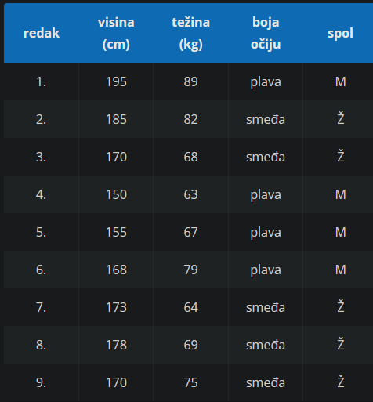
U domenskoj su tablici entiteti pobrojeni i svaki redak predstavlja jedan entitet, odnosno jednu osobu. Sve osobe imaju svojstva koja smo utvrdili mjerenjem. Ono što želimo jest predvidjeti spol, dakle to je naše ciljano svojstvo. Stoga to svojstvo ne možemo uzeti kao prediktor jer ga za neke buduće uzorke nećemo znati (primjerice, možemo zamisliti da će stupiti na snagu zakon po kojem regrute ne smijemo upitati za spol).
Prije nego što idemo dalje, napravimo malu analizu. Uočimo da u domenskoj tablici ima više žena nego muškaraca. To samo po sebi nije problem, ali bi mogao biti problem da je u tablici primjerice samo jedan muškarac jer tada ne bismo imali dovoljno dobar uzorak. Zamislimo da imamo samo jednog muškarca visokog 181 cm u 1. retku i još 200 žena od kojih čistom slučajnošću nijedna nije visoka 181 cm. Na temelju čega bismo mogli očekivati da će algoritam shvatiti da za biti muškarac nije bitno svojstvo da je netko visok točno 181 cm? Iz podataka djeluje kao da to jest bitno, ali mi znamo da nije i ne želimo da algoritam uči uzimati u obzir svojstva za koja znamo da nisu bitna. Ako možemo, to ćemo nastojati izbjeći pa domenska tablica treba biti koliko-toliko ujednačena. Naravno, nad domenskom tablicom možemo evaluirati i formule. Na primjer, možemo tražiti sve članove domene za koje vrijedi
Visina>170∨BojaOciju=plava.
Ovo bismo mogli lako izraziti jezikom logike prvoga reda i s pomoću formula stvarati podtablice domenske tablice.
Vratimo se domenskoj tablici. Uočimo da boja očiju savršeno „predviđa“ spol na ovom (malom) uzorku. No, je li tako i u stvarnosti? Naravno da nije. To je samo čudna anomalija u ovom uzorku. Zbog toga svojstvo „boja očiju“ izbacujemo jer bi inače ono sasvim slučajno dominiralo nad drugim svojstvima. Ne želimo da naš model, koji treba izvesti ispravno induktivno zaključivanje, zaključi kako ne postoje žene s plavim očima.
No, ovdje treba biti oprezan jer ne želimo unaprijed zaključivati što je bitno, a što nebitno za ciljano svojstvo −
to ćemo ostaviti algoritmu. Želimo odstraniti anomalije za koje smo sigurni da su se slučajno poklopile kao jako dobar ili savršen prediktor za ciljano svojstvo. Zašto? Zato što ako bismo ih ostavili, tada bi ta svojstva dominirala nad ostalima.
Algoritam bi se previše oslanjao na njih i ne bi učio druge pravilnosti. Na pitanje koja svojstva treba odbaciti, ne postoji znanstveno jednoznačni odgovor, no dobra je ideja za početak izbaciti svako svojstvo koje samostalno radi predobru predikciju (bez obzira mislimo li da ima veze ili nema veze s ciljanim svojstvom).
Dakle, boju očiju izbacujemo pa je čista domenska tablica prikazana u nastavku.
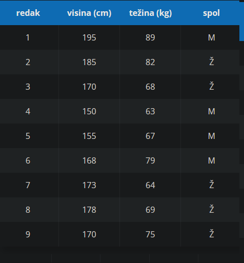
Grafički prikaz domenske tablice
Ni jedan prediktor ne može reći je li neki entitet M ili Ž, već samo ima li on neko svojstvo ili ne. Stoga svojstvo „spol“ koje ima dvije moguće vrijednosti, M i Ž, pretvaramo u svojstvo „x
jest žena“ koje će imati vrijednosti 0 ili 1, odnosno istinu ili neistinu
Prisjetite se da smo ranije istinu i neistinu označavali I i N. Kako se u računarstvu one uvriježeno označavaju kao 1 i 0, u ovom ćemo poglavlju koristiti te oznake.
Stoga domenska tablica poprima sljedeći oblik:
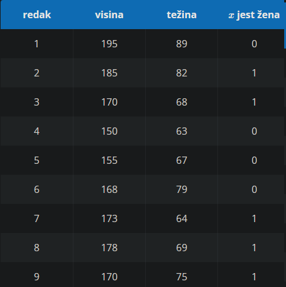
Uočimo da smo sada dobili sve numeričke vrijednosti pa domensku tablicu možemo prikazati u koordinatnom sustavu kao na donjoj slici.
Međutim, na slici su ucrtani i mali obojeni kvadrati. Oni predstavljaju neke nove entitete kojima ne znamo spol, ali znamo njihovu visinu i težinu pa smo ih mogli ucrtati u koordinatni sustav.
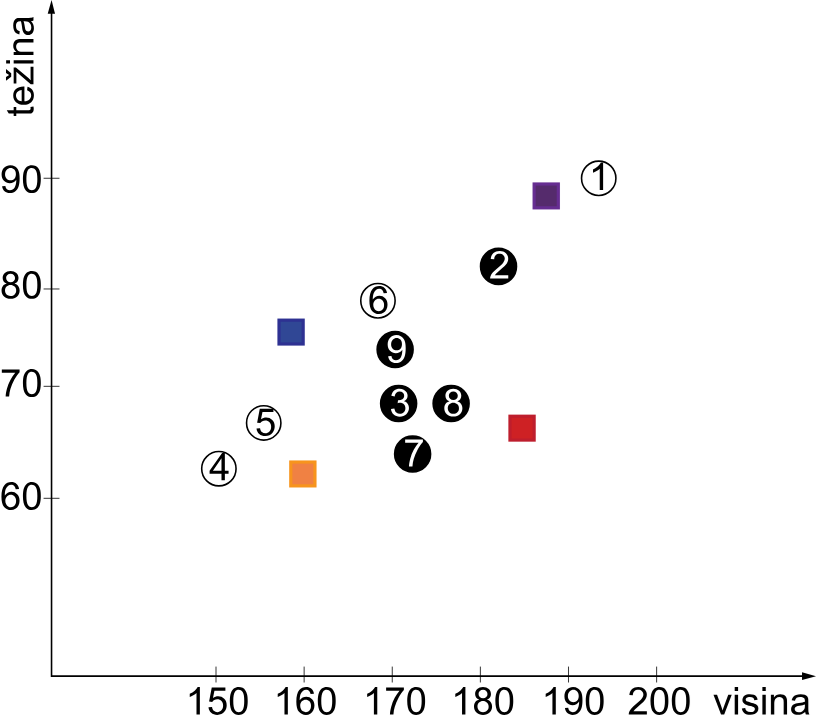
Odabir modela
Vratimo se na žuti i ljubičasti kvadrat. Očito je da nam za odluku ovdje treba precizna granica, odnosno nacrtana hiperravnina. Pogledajmo dvije moguće hipperravnine na slici ispod.
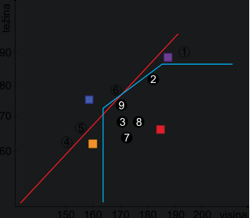
Zamislimo da imamo dva modela, jedan koji možemo nazvati „plavi“ jer je nacrtao plavu hiperravninu i jedan koji možemo nazvati „crveni“ jer je nacrtao crvenu hiperravninu.
Koji je od njih u pravu? Crveni kaže da su ljubičasti i žuti kvadrati zapravo crni krugovi (žene), a plavi kaže da su bijeli krugovi (muškarci).
Naravno, eksperimentalno će se utvrditi koji je model u pravu. Ali zamislimo da je ljubičasti kvadrat u stvarnosti žena, a žuti je u stvarnosti muškarac. U tom su slučaju i crveni i plavi model jednog pogodili, a drugog nisu. Po tome su jednako dobri. Ali jesu li oni do kraja jednako dobri?
Uočimo dvije stvari. Crveni model stvara hiperravninu koja je ravna linija, a plavi je nepravilniji. Pri odabiru modela može nam pomoći filozofijsko načelo koje se zove Occamova britva.
Occamova britva
Prema načelu Occamove britve vrijedi: ako su dva sustava po svemu drugom jednaka, bolji je onaj sustav koji je jednostavniji.
U našem bi primjeru to značilo da je bolji crveni model. Ali jesu li crveni i plavi modeli po svemu drugom jednaki? Uočimo bijeli krug s brojem 1. Njega je crveni model pogrešno proglasio ženom. Plavi model je sve krugove točno klasificirao. Stoga bismo jedini pravi odgovor mogli dobiti uvrstivši jako puno novih podataka i tada bismo vidjeli koji je bolji. Indukcija je u svojoj srži empirijska i eksperimentalna.
Jednostavna umjetna neuronska mreža
Preostaje nam još pokazati kako se „crta“ hiperravnina. Za to nam treba neki algoritam strojnog učenja. Objasnit ćemo kako funkcionira jednostavna umjetna neuronska mreža. Ponovimo prethodnu domensku tablicu, ali tako da sada visinu izrazimo u metrima (tablica ispod).
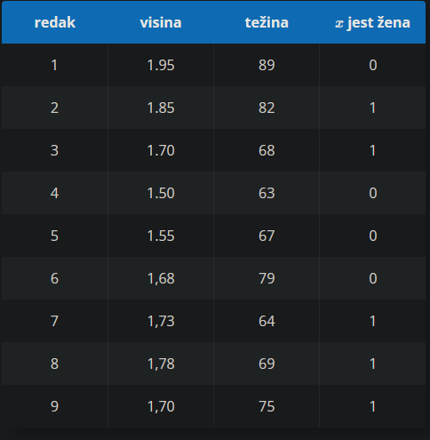
Neuronska mreža mora dobiti onoliko inputa koliko ima bitnih svojstava, a u našem su slučaju to visina i težina. Mreža će pokušati predvidjeti ciljano svojstvo i, ako bude loša, malo ćemo popraviti parametre i pokušati ponovno.
Mreža dakle ima dva ulazna neurona (po jedan za svako svojstvo) i jedan izlazni neuron (za rezultat koji odgovara ciljanom svojstvu). No, uz svako input svojstvo, kao parametar se pojavljuje još i težina w
koja kazuje sustavu u kojoj mjeri to svojstvo treba uzeti u obzir.
Naša mala umjetna neuronska mreža sada je sljedeća formula:
σ(x1w1+x2w2)
.
Sigma funkcija zove se logistička funkcija i ona je matematički definirana ovako: σ(x)=11+e−x
, a njena jedina uloga je garantirati da će rezultat računanja (ciljano svojstvo) biti između 0 i 1. Sve vrijednosti iznad 0.5 zaokružuju se na 1, a sve ispod 0.5 zaokružuju se na 0.
Težine se u prvom koraku uzimaju nasumično, kao vrijednosti između 0 i 1. Uzmemo li nasumično da je w1=0.61
i w2=0.01, prvi korak učenja izgledao bi ovako: Redak 1: σ(x1w1+x2w2)=σ(1.95⋅0.61+89⋅0.01)=0.88(u stvarnosti je 1. redak 0)Redak 2: σ(x1w1+x2w2)=σ(1.85⋅0.61+82⋅0.01)=0.87(u stvarnosti je 2. redak 1.)⋮I tako dalje za sve retke.
Vidimo da je 2. redak dobro klasificiran, a 1. redak nije. To znači da trebamo izmjeriti kolika je pogreška (u 1. retku pogreška je 0.88, a u 2. retku je 0.13) pa na temelju toga trebamo modificirati težine w1
i w2
i ponavljati postupak sve dok naša mreža dobro ne klasificira sve entitete.
Ovime smo opisali cijelu proceduru strojnog učenja i indukcije. Nalaženje težina jest srž indukcije i učenja. Sve što smo do sada opisali svodi se na to da neuronska mreža može naučiti koje su težine dobre (uočite da smo rekli „dobre“, a ne „prave“).
Kako se točno namještaju težine ne može se jednostavno pokazati jer se izračun temelji na parcijalnim derivacijama s pomoću kojih se računa koliko je pojedina težina „kriva“ za lošu klasifikaciju pa se ona onda više ili manje poveća ili smanji. U praksi se to radi s pomoću računala i ponavlja se jako puno puta −
mjereno u tisućama ili čak u milijunima koraka.
Efikasnost strojnog učenja
Za kraj pogledajmo kako se računa efikasnost klasifikacije, odnosno strojnog učenja, odnosno izračuna hiperravnine, odnosno indukcije.
Nadopunimo domensku tablicu imenima entiteta i uzmimo dva različita prediktora. Jedan će biti crveni model strojnog učenja koji smo ranije spominjali (koji predstavlja ravna crta na slici sa 162. stranice), a drugi će biti jednostavan klasifikator na temelju zadnjeg slova imena koji smo nešto ranije spominjali. Prisjetimo se, crveni model je klasificirao ispravno sve osim 1.\ retka koji je klasificirao kao ženu. A kako radi jednostavni prediktor na temelju zadnjeg slova imena?
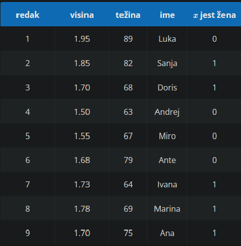
Vidimo da bi ovaj prediktor pogrešno klasificirao 1. redak kao ženu te 3. redak kao muškarca. Dakle, lošiji je od crvenog prediktora. Ali da se osoba u 1.\ retku na primjer zvala Tin, bi li postojala ikakva razlika? Tada bi crveni model tog muškarca pogrešno klasificirao kao ženu, a prediktor s imenima bi ženu u 3. retku (Doris) pogrešno klasificirao kao muškarca. Svaki bi imao jednu pogrešku, no jesu li one iste? Odgovor glasi − nisu. Ciljano svojstvo koje smo tražili glasi „x
je žena“, što znači da je crveni klasifikator u skup žena stavio nekoga tko tamo ne pripada, a prediktor s imenima u skup žena nije stavio nekog tko tamo pripada.
Postavimo malo drukčiji scenarij da bismo vidjeli kako ova asimetrija može biti jako opasna. Zamislimo da smo napravili prediktor koji kaže kada će neka nuklearna elektrana zakazati. Nisu jednako važne pogreške u slučaju da neki prediktor oglasi lažnu uzbunu (pa sve provjerimo i ustanovimo da je sve u redu) i kada prediktor prešuti, a trebao je oglasiti uzbunu.
Zato za svaki prediktor postoje tri osnovne mjere uspješnosti:
1. točnost
2. preciznost
3. obuhvat
Točnost kaže koliko je entiteta neki prediktor točno, a koliko pogrešno klasificirao. Preciznost kaže koliko od onih koji su pogrešno klasificirani su zapravo bili točno klasificirani (to su takozvani lažno pozitivni). Obuhvat kaže koliko od onih koje nismo klasificirali smo trebali klasificirati (to su takozvani lažno negativni).
Sljedeća slika grafički prikazuje ideju:
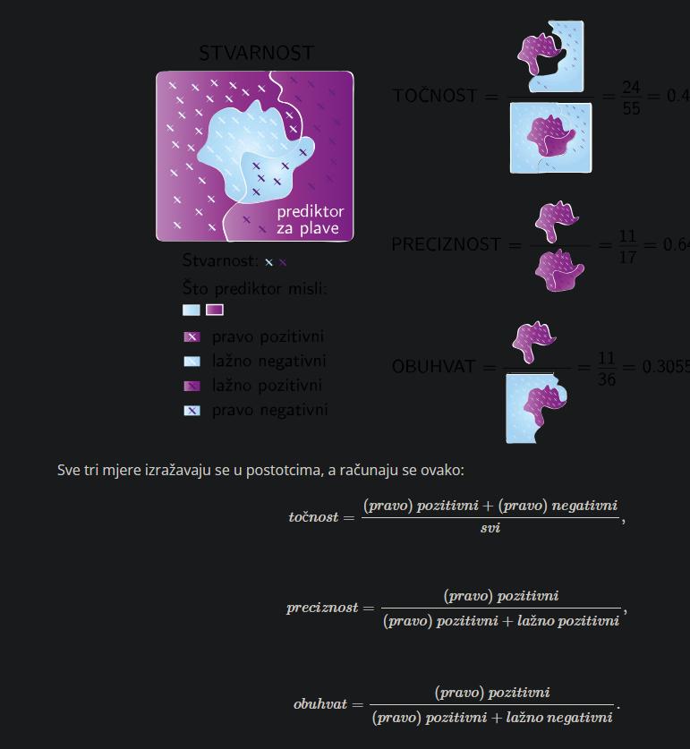
Analogija
Pariz je Francuskoj ono što je Madrid Španjolskoj.
Takav je oblik zaključivanja vrlo čest u svakodnevnom životu. Dva se entiteta smatraju sličnima jer dijele jedno ili više svojstava. U ovom slučaju je to svojstvo „biti glavni grad“. Ipak, s analogijom treba biti oprezan jer jedno dijeljeno svojstvo ne znači da su i ostala svojstva dijeljena.
Zaključak po analogiji
Zaključak po analogiji jest oblik zaključivanja u kojem se iz premise koja govori o svojstvu s
predmeta x te (prešutne) premise koja govori o sličnosti predmeta x i predmeta y izvodi konkluzija u kojom se tvrdi da predmet y također ima svojstvo s
.
Upozorenje
Zaključivanje po analogiji nije valjan oblik zaključivanja, ali ima svoje važne primjene.
Jan je prije nekoliko godina imao djevojku Irenu koja je imala plavu kosu, bila vegetarijanka te je stalno kasnila na spojeve. Nedavno je Jan upoznao Leu koja ima plavu kosu i vegetarijanka je. S obzirom na to da kod nje Jan prepoznaje neka svojstva koja je imala njegova bivša djevojka, izvodi pogrešnu analogiju da će i Lea kasniti na spojeve, a da je nije ni pozvao na spoj.
U dodatnom tekstu možete pročitati o jednoj primjeni analogije u strojnom prevođenju.
Word2vec
S pomoću umjetnih neuronskih mreža stvoren je način na koji se zaključivanje analogijom može pretvoriti u pravo deduktivno zaključivanje.
No, najprije trebamo riječi pretvoriti u neke drukčije, numeričke reprezentacije koje se dobivaju relativno složenim algoritmima, temeljenim na umjetnim neuronskim mrežama. Napominjemo da je nalaženje dobrih reprezentacija koje mogu „hvatati“ značenje riječi poprilično veliki problem.
Jedan takav algoritam koji danas uspješno rješava spomenuti problem naziva se Word2vec jer za pojedine riječi stvara i pridružuje im vektore, odnosno uređene n
-torke decimalnih brojeva. Izrada tog algoritma bila je velika prekretnica u razvoju znanstvenog područja koje se naziva računalnom lingvistikom i koje je danas interdisciplinarno područje računarstva i lingvistike.
Premda je Word2vec algoritam novijeg datuma, on se temelji na ideji da je značenje neke riječi određeno njezinim kontekstom, odnosno njezinom upotrebom u jeziku, što je stara filozofska ideja koju je detaljno razradio Ludwig Wittgenstein. Word2vec je algoritamska implementacija te ideje.
Ova umjetna neuronska mreža uči predviđati značenje neke riječi iz njezinih dvaju „svojstava“: riječi ispred nje i riječi iza nje, i to ako je kontekst 1. Ako je kontekst 2, onda se uzimaju dvije riječi ispred i dvije riječi iza. Tako će primjerice riječi „pravnik“ i „odvjetnik“ dobiti slično značenje jer se često javljaju u sličnim kontekstima.
Te reprezentacije su uređene n
-torke (odnosno vektori) običnih decimalnih brojeva. Na primjer, reprezentaciju riječi „Madrid“ koju ćemo za naše potrebe zapisati kao repr(Madrid), Word2vec bi dao samo kao vektor, recimo (4.5,−0.7): repr(Madrid)=(4.5,−0.7). Isto tako možemo zamisliti da je primjerice repr(Pariz)=(3.3,2.1), repr(Francuska)=(1.1,0.9) i repr(Spanjolska)=(2.3,−1.8)
.
Tek kada imamo dobre reprezentacije pojmova, možemo formalno pristupiti analogiji. Ako vrijedi
Pariz je Francuskoj ono što je Madrid Španjolskoj. ,
onda možemo zaključiti da nakon što Parizu oduzmemo Francusku, trebamo dobiti isti rezultat kao da smo Madridu oduzeli Španjolsku. Intuitivno, rečenica „Pariz je glavni grad Francuske.“ može se smisleno shvatiti kao
Pariz = (Glavni grad, Francuska) ,
ili čak u nekom prenesenom značenju kao
Pariz = Glavni grad + Francuska .
Ovo „preneseno značenje“ je ono što trebamo −
to je reprezentacija koju će nam dati Word2vec. Kada imamo vektorsku reprezentaciju riječi, rečenica „Pariz = Glavni grad + Francuska“ će postati pravo zbrajanje vektora i mogli bismo zapisati:
repr(Pariz)=repr(GlavniGrad)+repr(Francuska)
.
Tu postoji mali problem. Ne znamo vrijednost repr(GlavniGrad)
. No sada kada imamo vektore, možemo je izračunati: repr(GlavniGrad)=repr(Pariz)−repr(Francuska)=(3.3,2.1)−(1.1,0.9)=(2.2,1.2) Osim toga, dodamo li reprezentaciji repr(GlavniGrad) reprezentaciju repr(Spanjolska), dobit ćemo vrijednosti blizu reprezentacije repr(Madrid), tj. vrijedi sljedeće: repr(Pariz)−repr(Francuska)+repr(Spanjolska)≈repr(Madrid)
Ponovno napominjemo da sve ovo ovisi o našoj sposobnosti da nađemo dobre reprezentacije riječi kao što ih daje Word2vec. Ključni dio je da te reprezentacije moraju biti takve da u sebi imaju značenje riječi. Kao što je podjednaka razlika između reprezentacija za Madrid i Španjolsku s jedne strane te Pariz i Francusku s druge strane, tako u tim reprezentacijama (zamislimo ih u koordinatnom sustavu), riječi poput „pravnik“ i „odvjetnik“ trebaju biti blizu. Zapravo u cijelom tom koordinatnom sustavu značenjski slične riječi trebaju biti blizu. To radi Word2vec kad se dobro utrenira.
Tek kada imamo pravo značenje riječi pretvoreno u numeričke vrijednosti, možemo formalno pristupiti analogijskom zaključivanju jer se kod analogija, za razliku od klasičnog zaključivanja, sve svodi na sadržaj. Sjetimo se kako u primjeru „Svi ljudi su smrtni.“, „Sokrat je čovjek.“ dakle „Sokrat je smrtan.“ logički slijed ne ovisi o značenju riječi. Za razliku od dedukcije, analogija je u potpunosti ovisna o ispravnoj reprezentaciji značenja.
U deduktivnom slijedu smo cijelim formulama oblika ∀xPxc
(sudovima) pridruživali istinitosne vrijednosti. Kod indukcije smo gledali je li Px ili ¬Px za neki novi objekt c s obzirom na druga svojstva koja objekt dijeli s poznatim objektima. Kod analogija taj c dobiva vektor kao reprezentaciju pa možemo reći da je c sličan d ili nije. Na taj smo način sve dublje prodirali u strukturu i otkrivali vrlo kompleksne jezične i logičke fenomene.
Hipoteza i činjenica
Činjenica
Činjenica je tvrdnja u znanosti koja je potvrđena mnogo puta, za koju postoje određene evidencije te se na temelju toga smatra istinitom.
Sve u znanosti ima određenu dozu sumnje pa iako je na različite načine dokazano da je Zemlja okrugla, i dalje postoje „skeptici“ koji tvrde da je Zemlja ravna ploča, odnosno disk. Nekada davno, prije no što je bilo moguće snimiti Zemlju iz svemira ili je oploviti, smatralo se ne samo da je ravna ploča nego da je na leđima nose veliki slonovi koje na svojim leđima nosi još veća kornjača.
Takve su hipoteze, koje su u određenim razdobljima smatrane i činjenicama, opovrgnute različitim dokazima (primjerice, postojanje plime i oseke, promjena duljine sjene predmeta u različita doba dana, snimke iz svemira...).
Iako neki ni danas ne vjeruju da je Zemlja okrugla, radi se o nečemu što je potvrđeno toliko mnogo puta i na različite načine, te −
što je također važno − nikada nije opovrgnuto. Iako to, doduše, ne možemo smatrati apsolutnim dokazom, ipak se to u znanosti smatra činjenicom. Naime, iako s logičke točke gledišta može izgledati sporno da se nešto za što ne postoji jedan jedinstveni dokaz koji se ne može osporiti smatra činjenicom, u stvarnom je svijetu situacija često takva da ne možemo propitati sve situacije, da ne možemo obuhvatiti sve moguće slučajeve i da ne možemo dobiti takav dokaz. Zato ga i ne zahtijevamo jer ako bismo to zahtijevali, ne bismo imali gotovo nijednu znanstvenu činjenicu.
v
Uzmimo još jedan primjer. Dosad su sve viđene trobojne mačke ženke te su znanstvenici otkrili da je boja mačjeg krzna povezana s x-kromosomima. Ženske životinje imaju dva x kromosoma (xx), dok mužjaci imaju jedan x kromosom i jedan y kromosom (xy). Genetičko kodiranje crne ili narančaste boje nalazi se u x kromosomu. Kodiranje za bijelu boju potpuno je odvojeni gen. Budući da ženke imaju dva x kromosoma, mogu imati dvije različite boje i bijelu. S druge strane, kako mužjaci imaju samo jedan x kromosom, oni mogu imati samo jednu boju uz bijelu. Naravno, ne možemo biti sigurni da se neće pojaviti trobojni mačak. To bi trebalo biti moguće u slučaju kromosomske aberacije (kombinacija xxy kromosoma). Ali ako je to jedina mogućnost, tada bi naša činjenica mogla glasiti: Ako je mačka trobojna, onda je ženka ili se radi o kromosomskoj aberaciji.
Hipoteza
Hipoteza ili pretpostavka jest moguće objašnjenje neke pojave koje je tek potrebno ispitati. Ona je samo početna točka za buduća istraživanja.
Primjerice, ako u nekom laboratoriju ugledate bijelog miša koji ima crne točke, možete pretpostaviti da su te crne točke dobivene nekom genskom mutacijom, da su dobivene transplantacijom ili bojenjem miša crnim flomasterom 4
.
Zatim možete istražiti sve te hipoteze i krenuti istraživati onu koja je najviše potkrijepljena dokazima.
U posljednjem se slučaju radi o jednoj od velikih znanstvenih prijevara gdje je grupa znanstvenika iz New Yorka 1974. godine tvrdila da je uspješno obavila transplantaciju kože genetski nepovezanih životinja, ali se ispostavilo da su dijelove krzna bijelih miševa bojili crnim flomasterom.
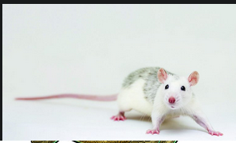
Logičke pogreške
Pogreška ad hominem odnosi se na pozivanje ili nalaženje razloga za neki postupak u osobnim obilježjima neke osobe, kao što je podrijetlo, nacionalnost, fizički izgled i sl., što nema uporišta u racionalnim argumentima.
Ad hominem se često koristi u političkim raspravama, pri čemu se usmjerava na pitanja stila, govora, odjeće (što je pogotovo prisutno u slučaju političarki), a ne na njihove sposobnosti.Pogreška ad hominem vjerojatno je najpoznatija logička pogreška, a o njoj je govorio još Aristotel u svom djelu Sofistička pobijanja. Iako je ta pogreška vrlo česta, radi se o načinu razgovora koji je neuljudan te ne dovodi do konstruktivne atmosfere koja je važna za raspravu.
Primjeri:
∙ Ona je dotjerana plavuša, dakle nije dobra političarka.
∙ Iako imate sve kvalifikacije za ovo radno mjesto, niste dobar kandidat za rad u gradskoj upravi jer dolazite iz ruralne sredine.
∙ Naravno da je napravio to što jest, ipak je on...(Slavonac, Dalmatinac, Zagorac...).
∙ N. N. ne može biti dobar sveučilišni profesor jer je član LGBT zajednice.
Ipak, trebamo pripaziti i dobro procijeniti relevantnost iznesenih argumenata. Primjerice,
N. N. je političar kojem je dokazana pronevjera novca, stoga nije dobar političar.
Političar obavlja javnu dužnost i jedna je od njegovih zadaća rad za opće dobro. Ako je toj osobi dokazana pronevjera novca, bez obzira na konkretni slučaj o kojem se radi, opravdano je sumnjati da takva osoba radi za opće dobro, odnosno da je stoga dobar političar.
Osnovna struktura argumenta u ovom se primjeru sastoji u tome da prvi sugovornik iznosi svoj argument, a drugi ga sugovornik pojednostavljuje ili iskrivljava.
Umjesto da se obračuna sa stvarnim sugovornikom, drugi sugovornik obračunava se s njegovom lošom kopijom, odnosno slamnatim čovjekom ili strašilom. On napada tu iskrivljenu inačicu jer ju je lakše napasti i time „pobija“ originalnu tvrdnju prvog sugovornika.
Primjeri:
Osoba A: Trebalo bi dopustiti učenicima da na božićnom koncertu pjevaju i druge pjesme koje su uvježbali, a ne samo božićne.
Osoba B: Ti želiš zabraniti božićne pjesme!
Majka: Možeš igrati igrice tek kad pročitaš lektiru.
Sin: Ti me ne voliš. Samo ti je važno da imam dobre ocjene. Da me voliš, bilo bi ti u redu da radim ono što me čini sretnim.
Ad populum
Pogreškaad populum uzima kao dokaz istinitosti to što neka skupina ljudi ili općenito puno ljudi vjeruje u nešto.
Broj ljudi koji vjeruju u neku tvrdnju nevažan je za njezinu istinitost. Tijekom povijesti se pokazalo da uvjerenja milijuna ljudi mogu biti pogrešna, primjerice da je Zemlja ravna ploča ili da je Zemlja u središtu svemira.
Pogreška ad populum često se (i namjerno) koristi u reklamnim kampanjama s obzirom na to da ljudi imaju težnju za pripadnošću.
Primjeri:
∙ Reklama prodavaonice odjećom: Ove jeseni sve modno osviještene dame nose naše žute sakoe.
∙ Reklama teleoperatera: Ako i ti želiš dobiti pogodnosti koje su već prepoznali milijuni korisnika, prijeđi na našu mrežu.
∙ Milijuni ljudi vjeruju da cjepivo uzrokuje autizam pa onda sigurno uzrokuje.
Lažna dvojba jest pogreška pri kojoj se uzimaju u obzir samo dvije opcije kao moguće alternative. Tu se najčešće radi o dvije krajnosti, a zapravo se zanemaruju sve opcije koje se nalaze između tih dviju krajnjih opcija.
Primjeri:
∙
Ili ste za nas ili ste protiv nas.
∙ (Dijete govori roditeljima:) Ili ćete mi kupiti ovu novu knjigu ili smatrate da čitanje uopće nije važno.
∙ Ili podržavate aktualnu predsjednicu ili ste ženomrzac.
Primjeri:
∙ Pogreška autoriteta nastupa kada se sve što neka osoba kaže smatra istinitim samo zato što ona predstavlja autoritet.
Iako zasad nitko nije pristao uložiti u moj projekt, jedan mi je poznati političar rekao da je projekt vrlo isplativ pa ću stoga nastaviti raditi na njemu.
∙ Treba uzimati puno C vitamina jer je liječnik tako rekao.
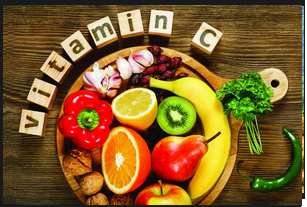
Argumentum ad baculum
Pogreška argumentum ad baculum nastupa kada se koga želi u nešto uvjeriti zastrašivanjem, ucjenom, prijetnjom ili prisilom, a ne na temelju valjanog argumenta.
Primjeri:
∙
Preporučio bih Vam da više ne parkirate automobil ispod moga prozora. Naime, susjed koji ga je prije Vas tu parkirao iznenada je preminuo. Isto bi se moglo dogoditi i Vama, a to nitko od nas ne želi, zar ne?
∙ (Učenik govori profesoru:) Zaslužujem odličnu ocjenu, učio sam cijelu godinu. Usto, znate da poznajem Vašu ženu. Sigurno ne želite da sazna da se družite s profesoricom matematike.
Post hoc, ergo propter hoc
Post hoc, ergo propter hoc (poslije toga, dakle zbog toga) logička je pogreška u kojoj se tvrdi da je jedan događaj uzrok drugom samo zato što mu je prethodio. To što je događaj prethodio drugom događaju, nije dovoljan razlog za zaključak da ga je i uzrokovao. Ta je pogreška u temelju različitih rituala.
Primjeri:
∙
Nogometaš je na nekoliko utakmica zaredom nosio čarape koje mu je poklonila djevojka te je svaki put zabio gol. Od tada nogometaš na svakoj utakmici nosi te čarape jer misli da su one uzrokovale njegovu dobru igru.
∙ Dijete je primijetilo da je majka loše volje svaki put nakon što opere kosu, pa je zaključilo da pranje kose uzrokuje njezino loše raspoloženje.
Ad ignorantium
Ako osoba tvrdi da je neka tvrdnja istinita, odgovorna je za pružanje dokaza u prilog toj tvrdnji. Nevaljano je tvrditi da je neka tvrdnja istinita samo zato što nema dokaza da je lažna. Drugim riječima, samo zbog toga što nema dokaza protiv neke tvrdnje, to automatski ne čini tu tvrdnju istinitom.
Primjeri:
∙ Nastavnik je uvjeren da ga učenici vole jer nije čuo da se žale na njega.
∙ Mnoge religije vjeruju u postojanje više sile, ali malo je onih koje iznose argumente o njihovu postojanju. Umjesto toga, mnogi tvrde da se ne može dokazati da viša sila ne postoji.
Pogreška skliskog terena
Pogreška skliskog terena tvrdi da ako se dopusti neki događaj, to će rezultirati i nekim drugim (puno ekstremnijim) događajem iako između ta dva događaja ne postoji sigurna i jasna kauzalna veza, odnosno najčešće nema nikakva dokaza za to da bi jedan događaj povlačio drugi. Ova logička pogreška često ima namjeru zastrašivanja.
Primjeri:
∙
Zakon ne treba dopustiti promjenu spola jer ako se to dopusti, onda će se morati dopustiti i to da čovjek postane majmun, mačka, krokodil...
∙ Ako se legalizira eutanazija bolesnika u terminalnim fazama bolesti, uskoro će se zatražiti i legalizacija eutanazije u slučaju bilo koje bolesti.
Argumentum ad misericordiam
Pogreška argumentum ad misericordiam kao svoje argumente iznosi činjenice koje pozivaju na sažaljenje te se iz tog razloga tvrdi da bi nešto trebalo uvažiti ili dopustiti.
Primjeri:
∙
Mislim da zaslužujem potpis iako nisam bio na dovoljnom broju predavanja. Naime, ovaj sam semestar prekinuo s djevojkom, umrla mi je baka, uginuo pas, a i sam s^am se ozlijedio na nogometu. Stoga zaista nisam mogao dolaziti.
∙
Molim vas, nemojte me kazniti. Dovoljno je što će mi žena prigovarati da kasnim kući.
Ovime popis logičkih pogrešaka nije dovršen, nego smo nastojali prikazati neke od najčešćih i najzanimljivijih logičkih pogrešaka. Ako vas zanimaju logičke pogreške, dodatne informacije možete pronaći na internetu.
Logika i kritičko razmišljanje
Kritičko je mišljenje sposobnost jasnog i racionalnog mišljenja, razumijevajući logičku povezanost ideja.
4.7.2. Jezična pragmatika
Iz različitih običnih jezika koje smo učili poznat nam je pojam jezične pragmatike, odnosno discipline unutar lingvistike koja izlazi iz okvira samoga jezika te se bavi odnosom jezika i konteksta u kojem se koristi, a naglasak se stavlja i na pozadinsko znanje govornika. Dakle, jezične pojave koje ćemo ovdje susresti pripadaju pragmatici, a bavit ćemo se presupozicijama i implikaturama.
Presupozicija
Uzmimo kao primjer rečenicu
Mark je opet zakasnio.
Pretpostavit ćemo da je Marko:
već ranije kasnio
trebao doći na neko dogovoreno mjesto ili online sastanak u dogovoreno vrijeme itd.
Dakle, sve su to pretpostavke koje prešutno podrazumijevamo smatrajući danu rečenicu istinitom. Dakako, ona to ne mora biti, pa Marko može odgovoriti: „Nisam zakasnio, dogovorili smo se da ćemo se naći kasnije.“, ali vodimo se trenutačno time da je dana rečenica istinita. Navedena se jezična pojava naziva presupozicijom (prema engleskome izrazu za pretpostavku).
Presupozicije
Presupozicije iskaza jesu podatci koje govornik pretpostavlja kako bi dana rečenica imala značenje u trenutnom kontekstu.
Iako o tome tada nismo govorili, prepoznavanje presupozicija bilo nam je važno i u logici prvoga reda jer nam je pomoglo ispravno i jednoznačno zapisati sudove s kojima smo se susretali.
Slijedi još nekoliko primjera rečenica i njihovih presupozicija. Uočite da jedna rečenica može imati više presupozicija, kao i da jedna presupozicija može biti presupozicijom većega broja rečenica.
Sadašnji kralj Francuske je ćelav.
Presupozicija: Postoji sadašnji kralj Francuske.
Marin je požalio što nije učio.
Presupozicija: Marin nije učio.
Ana je prestala svirati gitaru.
Presupozicija: Ana je svirala gitaru.
Da sam došao ranije, stigao bih na trajekt.
Presupozicija: Nisam stigao na trajekt.
Moj mlađi sin rođen je u rujnu.
Presupozicija: Imam dva sina.
Je li nešto presupozicija određene rečenice ili nije može se lako provjeriti negiranjem rečenice. Primjerice, ako negiramo rečenicu „Ana je prestala svirati gitaru.“ dobivamo „Nije istina da je Ana prestala svirati gitaru.“ ili „Ana nije prestala svirati gitaru.“, a presupozicija je i dalje ista, odnosno da je Ana svirala gitaru (ali možda i da Ana svira gitaru). Ako za negiranu rečenicu i dalje vrijedi ista presupozicija, tada je ona točno određena.
Implikatura
Kod presupozicija u rečenici je prešutno bila sadržana neka informacija relevantna za njezino razumijevanje. No, postoje i jezične pojave kod kojih govornici daju manje informacija no što bi bilo očekivano, odnosno iz raznih razloga (primjerice iz pristojnosti) ne kažu eksplicitno ono što misle. Stoga u razgovorima ponekad zaključujemo što je govornik mislio reći ne samo na temelju onoga što je rečeno, već i na temelju onoga što nam se čini da govornik pokušava postići.
Na primjer, ako nekoga pitate: Možeš li mi dodati sol?
zapravo ne pitate za njegovu sposobnost može li uzeti slanik u ruku i dodati vam ga, nego je to pristojan način da zatražite da vam doda slanik. Takve zaključke nazivamo implikaturama 5
. U njima sugovornik zaključuje što slijedi iz govornikove rečenice ili što implicira govornikova rečenica, vodeći računa o okolnostima u kojima je izgovorena.
Slijedi još nekoliko primjera implikatura.
Jasna ima trideset godina.
Implikatura: Jasna ima točno trideset godina.
Majka govori sinu: "Idem susjedi, vaćam se brzo. Ti promiješaj juhu svakih pola sata."
Implikatura: Majka se neće brzo vratiti (brzo je relativan pojam).
Ako si žedan, limunada je u hladnjaku.
Implikatura: Možeš se poslužiti limunadom.
Zaboravio sam da danas imamo nadoknadu nastave, a htio sam ići u kino. Mojoj sreći nema kraja.
Implikatura: Nisam sretan zbog nadoknade nastave.
Grčka zastava je plavo-bijela.
Implikatura: Grčka zastava je isključivo plava i bijela (ne sadrži druge boje).
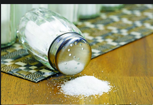
4.7.3. Logička struktura teksta
U svom ste se dosadašnjem obrazovanju, ali i slobodnom vremenu, susretali s različitim vrstama tekstova. Možda vam je ponekad, dok ste čitali članke na internetskim portalima, zasmetalo što je članak „nelogičan“, „očito loše preveden s nekog drugog jezika“ i slično. Možda vam se i pri čitanju beletristike nekad činilo da nešto nema smisla.
Premise i konkluzija
U ovom ćemo se dijelu baviti logičkom strukturom tekstova različitih vrsta te ćemo vas potaknuti da u tekstovima s kojima se susrećete provjerite koliko „imaju logike“. Isto možete raditi i gledajući filmove.
S pojmovima premisa i konkluzija susretali smo se ranije u ovom udžbeniku, a ovdje ćemo samo naglasiti što je za te pojmove važno kako bismo ih mogli prepoznati u različitim tekstovima s kojima ćemo se susretati.
Premisa
Premisa je tvrdnja kojom se pretpostavlja da je nešto istinito te se koristi kao potpora za neku drugu tvrdnju (konkluziju).
Na primjer:
∙ Logika je lagana.
∙ Ova je kemijska struktura nestabilna.
∙ Ljudi će do 2039. godine posjetiti Mars.
Premise mogu sadržavati neke od sljedećih izraza (ali nije nužno da sadržavaju ijedan od njih):
zbog toga što kako s obzirom na to da
budući da pretpostavljajući da jer
Konkluzija je tvrdnja do koje je moguće doći na temelju premisa, odnosno koju premise podržavaju. Ona je rezultat povezanosti među premisama.
Konkluzijama često prethodi neki od sljedećih izraza:
stoga zato dakle
kao rezultat to pokazuje da iz toga slijedi da
naime posljedično prema tomev
Dijagramiranje teksta
U nastavku ćemo pogledati nekoliko primjera tekstova u kojima ćemo pronaći premise i konkluziju, te ćemo vidjeti na koji je način iz premisa izvedena konkluzija, pri čemu ćemo se poslužiti metodom dijagramiranja teksta.
Za početak, u sljedećem tekstu odredimo premise i konkluziju, tako da svaku premisu stavimo u uglate zagrade i izvan zagrada napišemo oznaku (P1), (P2), (P3) itd. Konkluziju također stavimo u uglate zagrade te stavimo oznaku (K).
[Životinje koje se koriste za jelo često se ne drže u humanim uvjetima.] (P1)
[Životinje boli kada ih se ubija.] (P2)
[Dokazano je da pretjerana konzumacija životinjskog mesa može uzrokovati različite bolesti, poput kardiovaskularnih.] (P3)
[Stoga, ljudi bi se trebali što manje konzumirati hranu životinjskog porijekla.] (K)
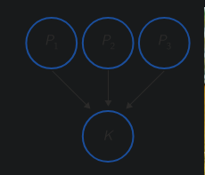
Imamo tri premise iz kojih je izvedena konkluzija. To možemo grafički (dijagramom) prikazati na sljedeći način:
Možemo imati i slučaj kada se radi o međusobno ovisnim premisama, pri čemu više njih daje povezanu argumentaciju. Pogledajmo sljedeći primjer:
[Učenici ne vole kada im nastavnici ispravljaju testove crvenom kemijskom olovkom.] (P1) [Znanstveno je dokazano da crvena boja na testovima potiče anksioznost kod učenika.] (P2) [Konačno, korištenjem crvene boje smanjuje se povezanost između učenika i nastavnika.] (P3) [Stoga, nastavnici ne bi trebali ispravljati testove crvenom bojom.] (K)
Međusobnu ovisnost premisa prikazujemo vitičastom zagradom:
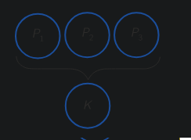
Pogledajmo i slučaj kada su određene premise potkrijepljene drugim premisama, kao u sljedećem tekstu:
[Globalizacija omogućuje slobodnu trgovinu.] (P1) [Slobodna trgovina omogućuje globalni gospodarski rast.] (P2) [Također, slobodna je trgovina jedina prilika siromašnim zemljama da se ekonomski razvijaju.] (P3) [S druge strane, globalizacija poboljšava otvorenost i toleranciju prema ljudima u ostalim dijelovima svijeta.](P4) [Stoga je globalizacija pozitivna i treba je poticati.] (K)
Dijagram je sljedeći:
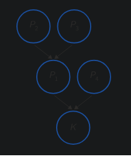
Alkoholi
Images
Image 1 Title
Image 2 Title
Etanol nastaje prirodnim procesom, fermentacijom ili alkoholnim vrenjem djelovanjem enzima kvaščevih gljivica pri čemu šećeri, ugljikohidrati iz voća, prelaze u etanol.
enzimi C8H12O6 2 C2H2OH + 2 CO2 Alkoholnim vrenjem dobivaju se alkoholna pića u kojima je volumni udio etanola do 16 %.
Pića s većim udjelom etanola dobivaju se destilacijom, primjerice, fermentiranoga voćnog soka.
Prekomjerna konzumacija alkohola uzrokuje brojne zdravstvene i društvene probleme.
Najčešći način priprave alkohola jest adicija molekula vode na alkene u kiselim uvjetima.
Primjerice, etanol se industrijski dobiva adicijom vode na eten pri povišenoj temperaturi i tlaku uz fosfornu kiselinu kao katalizator. =+H2O H3PO4 300 °C, 70 bar
OH Prema Markovnikovljevom pravilu adicijom vode, primjerice na propen, nastat će sekundarni alkohol propan-2-ol.
Primarne alkohole možemo prirediti reakcijama supstitucije primarnih halogenalkana s hidroksidom metala.
Br+ NaOH Δ OH + NaBr 1-brompropan propan-1-ol Oksidacijom alkena s jakim oksidacijskim sredstvima, primjerice kalijevim permanganatom, u lužnatoj sredini nastaju dvovalentni alkoholi, dioli.
он 3+2 KMnO4 + 4 H2O зно 0°C ljubičasta otopina OH + 2 MnO2+2 KOH smeđa otopina
Images
SLIKA 1
SLIKA 2
SLIKA 3
Alkoholi su kemijski reaktivni te od njih možemo pripremiti različite organske spojeve, primjerice alkokside, halogenalkane, alkene, aldehide, ketone i druge.
Reakcije alkohola s metalima Zbog polarnosti hidroksilne skupine alkoholi reagiraju kao slabe kiseline.
U tim reakcijama proton hidroksilne skupine može se supstituirati (zamijeniti) ionom alkalijskoga metala (natrijem ili kalijem).
Produkti tih reakcija ionski su spojevi -alkoksidi (SLIKA 1)
Reakcijom etanola i natrija nastaju natrijev etoksid i vodik.
2 CH2CH2OH + 2 Na - 2 CH,CH,O Na + H natrijev etoksid vodik
Zbog reakcije hidrolize vodena je otopina natrijeva etoksida lužnata.
CHỊCH,ONa + HẠO CH,CH2OH+Na+ OH Mentol je alkohol molekulske formule CH20.
Ima karakterističan miris i rashlađujući okus. Može se pripremiti sintetičkim putom ili ekstrakcijom iz metvice.
Upotrebljava se u prehrambenoj industriji za proizvodnju bombona i čaja te u kozmetičkoj industriji za proizvodnju parfema, sapuna i pasti za zube.
Mentol ima brojna ljekovita svojstva te poboljšava koncentraciju.
SLIKA 2
Postoje brojna istraživanja koja potvrđuju da miris mentola ima pozitivan učinak na brzinu i točnost prilikom rješavanja zadataka na ispitima.
Kreme na bazi mentola upotrebljavaju se protiv migrene i prehlade. Istražite učinak mentola na receptore u koži zbog kojega se javlja osjećaj hlađenja.
Reakcije alkohola s halogenovodikom
Reakcije alkohola s halogenovodikom jesu reakcije supstitucije u kojima su produkti halogenalkani i voda.
Hidroksilna skupina alkohola zamjenjuje se atomom halogenoga elementa.
Najbrže se zbivaju reakcije s tercijarnim alkoholima, a od halogenovodika najčešće su reakcije s klorovodikom i bromovodikom.
Reakcije primarnih i sekundarnih alkohola s HCI i HBr spore su, ali se mogu ubrzati zagrijavanjem. (SLIKA 3)